Ein Messer besteht aus einer Klinge und einem Griff (Heft). Die Klinge kann feststehend am Heft befestigt, ausschiebbar oder ausklappbar gestaltet sein. Messer dienen dem Trennen von Werkstoffen (Schneidgut). Der vorgesehene Anwendungszweck und das Schneidgut bestimmen die Form des Griffs und der Klinge sowie deren Schärfe und Spitze.
Messer sind aufgrund der scharfen Klingen und Spitzen gefährlich. Gründe für Verletzungsgefahren:
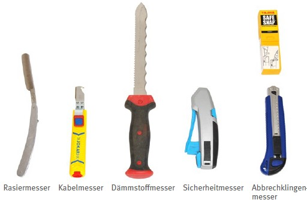
Abb. 6 Messertypen
Bei der Beschaffung eines Messers muss der geplante Einsatzzweck bekannt sein, um den Messertyp und die erforderlichen Qualitätsmerkmale festzulegen. Zumeist sind Messer nicht in einer Norm bestimmt. Je nach Anwendung ist jedoch zu prüfen, ob in diesem Fall Normen zu beachten sind. Beispiel: DIN EN ISO 8442-1 "Anforderungen für Schneidwaren zur Zubereitung von Speisen", nennt Anforderungen für Material und Eigenschaften der Klingen, die im Kontakt mit Lebensmitteln eingesetzt werden.
Messer mit GS-Zeichen sollten bevorzugt werden.
Wenn sich aus dem Einsatzzweck und dem Stand der Gefährdungsbeurteilung zur Arbeit mit Messern eine Alternative mit geringerem Gefährdungspotenzial ergibt, sollte sie bevorzugt werden. Das könnten andere Handwerkzeuge oder Maschinen sein:
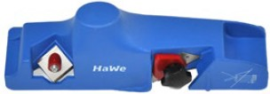
Abb. 7 Gipskarton-Kantenhobel
Bieten sich keine Alternativen zum Messer an, sollte die Auswahl auf das für den Einsatzzweck sicherste Messer fallen. Dann sind oft Spezialmesser mit besonderer Klingenform, Griffgestaltung oder Griffgeometrie die richtige Wahl:
Sehr unfallträchtig sind Arbeiten mit Cuttermessern, die hier hervorgehoben behandelt werden.
Am sichersten sind Cuttermesser mit verdeckter Klinge. Sie eignen sich gut zum Schneiden dünner Werkstoffe, wie Papier und Folien (Abbildung 8).
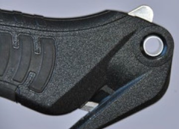
Abb. 8 Kopf eines Folienmessers mit verdeckter Klinge
Ist ein Cuttermesser mit verdeckter Klinge nicht geeignet, sollten grundsätzlich Cuttermesser benutzt werden, die einen automatisierten Klingeneinzug haben und oft als "Sicherheitsmesser" angeboten werden. Hier wird die Klinge am Ende des Schneidvorgangs automatisch mit Federkraft zurückgezogen (Abbildung 9 oben).
Diese Messer gibt es auch mit Schiebern, mit denen der automatische Klingeneinzug verhindert werden kann. Die Klingenlängen sind, je nach Messertyp, bis zu 8 cm (Abbildung 9 Mitte).
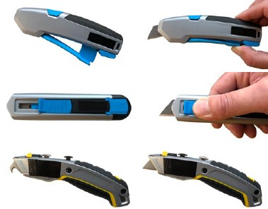
Abb. 9 Cuttermessertypen
Cuttermesser mit ausschiebbarer Klinge ohne Rückzug gibt es in unterschiedlicher Bauform und Klingenart. Bei häufig als Teppichmesser bezeichneten Cuttermessern sind kurze Trapez- oder Hakenklingen gebräuchlich. Werden sie nicht mit hoher Kraft benutzt, sind sie meist durch "Sicherheitsmesser" gut zu ersetzen. Modelle mit zwei Schiebern können mit zwei Klingentypen gerüstet werden. Ein Wechsel zwischen zwei Messern entfällt und die Arbeit geht sicherer und schneller voran (Abbildung 9 unten).
Cuttermesser mit Segmentklinge, auch Abbrechklinge genannt, können gewählt werden, wenn die Schnitte nicht tief und mit geringer Kraft ausgeführt werden. Sie können ebenfalls gut durch "Sicherheitsmesser" ersetzt werden. Bedingt das Schneidgut, dass die Klinge schnell stumpf wird, bieten die schnell verfügbaren Folgesegmente der Abbrechklinge durchaus Vorteile gegenüber "Sicherheitsmessern": Die Gefahren beim Klingenwechsel treten seltener auf. Zubehör, wie Abbrechklingen-Box (Abbildung 10) und Messertasche, sollten aus Gründen der Arbeitssicherheit Mindestvoraussetzung sein, um diesen Vorteil zu nutzen.
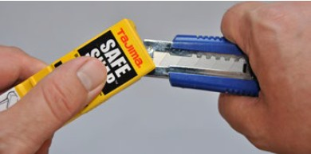
Abb. 10 Abbrechklingen-Box
Ergonomie bei Arbeiten mit Messern betrifft nicht nur das Messer, sondern ebenso die Einsatzbedingungen. Wie bei allen Handwerkzeugen gilt: Das Werkzeug muss der Hand gefallen. Ein Messergriff muss zur Größe der Hand passen und ein sicheres Greifen auch bei verschmutztem Griff zulassen. Eine ergonomische Form des Griffs bietet oft auch den Schutz gegen Abgleiten der Finger zur Klinge. Bei symmetrisch geschliffenen Klingen und ebenso symmetrischem Griff erfüllt das Messer die Anforderungen von Rechts- und Linkshändigkeit gleichermaßen. Sind Griffe unsymmetrisch geformt, ist immer die Händigkeit zu bedenken.
Bei unsymmetrisch geschliffenen Messern, wie bei einem einseitigen Wellenschliff rechts oder links, muss ebenso die Auswahl nach Rechts- oder Linkshändigkeit getroffen werden. Wird bei einem Cuttermesser die Klinge seitlich mit dem Daumen herausgeschoben, wie es bei manchen Cuttermessern mit automatischem aber bewusst vermeidbarem Klingenrückzug der Fall ist, ist die Händigkeit besonders zu beachten. Am Markt sind Modelle verfügbar, die zum Beispiel durch Umbau für beidhändige Verwendung geeignet sind (Abbildung 11).
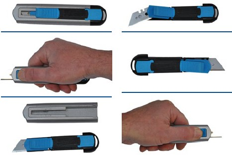
Abb. 11 Umbauschritte: Anpassung an die Händigkeit
Die aufzubringende Kraft ist je nach Schneidaufgabe unterschiedlich. Sind zum Schneiden geringe Handkräfte ausreichend, kann die Formgebung des Griffs einfacher sein als bei Messern, die mit höheren Kräften geführt werden. Während der Schneidaufgabe soll der Arbeitsbereich der ausführenden Person vorbehalten sein. Ausreichendes und blendfreies Licht erleichtern die Koordination der Schneidarbeit und trägt bedeutend zur Arbeitssicherheit bei.
Die Ergonomie und die Sicherheit bei Schneidarbeiten können durch entsprechend gestaltete Schneidplätze optimiert werden. Messerhalter an einem Schneidetisch erhalten die Ordnung und den Überblick. Ablagen für weitere Arbeitsmittel, wie Schienensysteme mit Systemmessern, Streifenschneider, Schnellspanner oder Kantenhobel, unterstützen die Abläufe. Sind hohe Kräfte erforderlich, sollte das Schneidgut so hoch angeordnet sein, dass es mit gesenkten Schultern zu bearbeiten ist. Anpassbare Tischhöhen verbessern die Körperhaltung. Schneidplätze können auch auf Baustellen mit modularen Elementen, wie Arbeitsböcken und Arbeitsplatten mit Aussparungen für Schnittlinien, stationär eingerichtet werden.
Persönliche Schutzausrüstung, wie schnittfeste Handschuhe, dürfen den sicheren Griff des Messers nicht mindern. Deshalb ist es wichtig, dass die Beschäftigten die Arbeit mit dem Messer auch mit Handschuhen erproben. Erfordert die Aufgabe das Tragen stichfester Kleidung, so muss darauf geachtet werden, dass sie gut sitzt, damit die Bewegungsfreiheit nicht eingeschränkt wird.
Für Beschäftigte, die Schneidaufgaben mit Messern ausführen, ist die Gefährdungsbeurteilung wegen der hohen Verletzungsrisiken die bestimmende Grundlage. Der Unterweisung, verbunden mit praktischen Übungen an arbeitsüblichem Schneidgut, kommt ebenfalls eine besondere Bedeutung zu.
Besonders gefährlich ist das Schneiden mit hohem Kraftaufwand. Das gilt für alle Messertypen: Wenn die Klinge aus dem Schneidgut gleitet, führt der hohe Kraftaufwand häufig zum Abrutschen oder am Ende der Schnittlinie zur unkontrollierten Messerbewegung. Deshalb immer weg vom Körper schneiden, zum Beispiel beim Öffnen einer Silikonkartusche.
Unfallursachen für Schnittverletzungen liegen häufig bei den Nutzenden selbst, wenn sie schnell erreichbare Messer unsachgemäß verwenden und nicht auf sichere Varianten zurückgreifen. Deshalb ist es wichtig, nur den Messertyp bereitzustellen und zu verwenden, der in der Gefährdungsbeurteilung als sicherste Variante aufgeführt worden ist. Für den Einsatz von Messern sind, je nach Gefährdungslage, Stech- oder Schnittschutzhandschuhe oder auch entsprechende Kleidung zu verwenden. Deren notwendige Festigkeit ergibt sich aus den Schneidaufgaben.
An Schneidarbeitsplätzen – auch an denen auf Baustellen – müssen die benötigten Messer eine sichere Ablage haben. Wenn es der Arbeitsablauf zulässt, sollten die Klingen auf der Ablage verdeckt sein. An Schneid- und Arbeitstischen können das Halterungen sein, in die die Klingen bis zum Heft eingeschoben werden können. Die Halterung muss alle dort benötigten Messer aufnehmen können. Idealerweise sind sie so angebracht, dass die Messer mit nur wenig ausgestrecktem Arm schnell und sicher herausgezogen werden können.
Werden Messer personengebunden zur Verfügung gestellt, sollten sie in Werkzeugtaschen, Koffern, Körben oder Rolltaschen – aber niemals in Hosentaschen –transportiert werden. Es wird empfohlen, am Arbeitsplatz dann nur die Messer herauszunehmen, die für die Tätigkeit auch eingesetzt werden sollen. Die entsprechenden Messer werden zunächst in die Halterung am Arbeitstisch oder in eine, am Gürtel getragene und zum Messer passende, Messertasche/Scheide geschoben.
Bei Arbeiten im Trockenbau sollte ein Schneidplatz für Gipskartonplatten eingerichtet werden, um den Einsatz spezieller Werkzeuge, wie Kantenhobel, Streifenschneider und an Schienen geführte System-Messer, zu ordnen. Lange Schnitte sind mit einem Streifenschneider immer sicherer und mit höherer Präzision ausführbar als mit Schiene und Cuttermesser – auch auf einem Plattenstapel. Für die Bearbeitung kleinerer Platten ist die Arbeit an einem (mobilen) Schneidetisch vorzuziehen. Werden für "freie" Schnitte Schienen benutzt, sind sie für den Schnitt sicher an der Gipsplatte zu befestigen und nicht etwa auf niedrig gelegenen Flächen mit dem Knie zu fixieren.
Weil es besonders risikoreich ist, mit Cuttermessern zu arbeiten, wird auch deren Verwendung hervorgehoben behandelt. Werden "Sicherheitsmesser" beim Schneiden von Klebestreifen genutzt, verschmutzen die Klingen beim Kontakt mit dem Kleber. Diese "Verklebungen" können die Funktion des Klingenrückzugs außer Kraft setzen. Deshalb sind bei dieser Verwendung eine häufigere Klingenprüfung und Reinigung erforderlich.
Ist der Einsatz von "Sicherheitsmessern" nicht sinnvoll und werden Cuttermesser ohne automatischen Klingenrückzug eingesetzt, sind das Zurückziehen der Klinge vor dem Ablegen und die Aufbewahrung in der Gürteltasche besonders wichtig. Dieser Ablauf muss zur Routine werden und erfordert Übung, besonders dann, wenn Messer mit weit ausgeschobener Klinge genutzt werden.
Bei Cuttermessern wird die Elastizität der langen Klinge gerne genutzt, um sie bei einem flächenbündigen Schnitt auf die Schneidebene zu pressen. Dabei besteht die Gefahr, dass eine beim Pressen gebogene Klinge aufgrund der Seitenkräfte bricht. Diese Gefahr besteht vor allem beim Biegen von segmentierten Klingen (Abbrechklinge). Bei diesen wird die Empfindlichkeit gegenüber Seitenkräften genutzt, um Segmente sicher abzubrechen. Flachbündige Schnitte dürfen daher nur durchgeführt werden, wenn die Klinge – ohne Biegung – flach aufliegt. Cuttermesser mit Abbrechklingen gehören zu den meistverwendeten Typen. Sie haben den Vorzug, dass bei hohem Verschleiß der Klinge (Schneide und Spitze) sehr schnell ein neues Segment genutzt werden kann. Die professionelle Arbeitshilfe zum Abbrechen der Segmente ist die oben aufgeführte Abbrechklingen-Box. Die Box ist auch schneller und sicherer zu nutzen als eine Zange. Beim Abbrechen muss eine Schutzbrille getragen werden.
Messer sind vor der Verwendung einer Inaugenscheinnahme zu unterziehen. Sind lose Teile zu erkennen, muss das Messer repariert bzw. entsorgt werden. Besonders die sicherheitsrelevanten Mechaniken müssen intakt und leichtgängig sein, anderenfalls darf das Messer nicht verwendet werden.
Die meisten Messer können unter fließendem Wasser gereinigt und mit Tüchern getrocknet werden. Die getrockneten Messer können in der Rolltasche oder, wenn sie mit einem Klingenschutz ausgestattet sind, auch im Koffer aufbewahrt werden. Nicht "rostfreie" Messer können in Ölpapier (säurefreies Öl) gelagert werden.
Die Mechanik der Cuttermesser und besonders der "Sicherheitsmesser" ist empfindlich gegen Verunreinigungen und Feuchtigkeit. Mechanische Reinigung und leichtes Auspusten (Schutzbrille tragen) zur Entfernung von Staub sind meist ausreichend. Trocken lagern!
Messer sind gefährliche Werkzeuge. Stumpfe Messer können noch gefährlicher sein als scharfe, weil für das Schneiden höhere Kräfte eingesetzt werden müssen. Das Nachschärfen mit Wetzstahl oder Handschleifgeräten kann schnell erlernt werden. Fachkundige in Schleifbetrieben, oder die, die Messer herstellen, sind verantwortlich für ihren Grundschliff. Wenn ein Messer über Wechselklingen verfügt, muss die stumpfe Klinge frühzeitig ersetzt werden. Zum Sammeln und für die anschließende sichere Entsorgung unbrauchbarer Messer und Klingen eignen sich schnitt- und stichsichere Behältnisse, wie Kunststoffboxen. Eine große, verschließbare Öffnung ermöglicht das sichere Entleeren.
| Infobox |
|
Hämmer und auch Beile gehören zu den Schlagwerkzeugen. Ein Hammer besteht aus einem Hammerkopf und einem Stiel. Hammerköpfe gibt es in verschiedenen Formen, Werkstoffen und mit unterschiedlichen Massen. Die Stiele sind, abhängig von Form und Masse des Kopfs, in Länge, Dicke und Material angepasst. Stiele aus Holz werden mit Keilen im sogenannten Auge des Hammerkopfs befestigt. Stahlstiele werden eingepresst und mit einem Metallstift im Kopf gesichert. Stiele aus Kunststoff und aus Glasfaser werden, je nach Ausführung, zum Beispiel mit einem Keil gesichert, geklebt oder mit anderen Verfahren gesichert. Die Arbeitsflächen der Hämmer aus Stahl, auch Bahn und Pinne genannt, sind gehärtet und ihre Seiten sind zur Vermeidung von Splittern gefast.
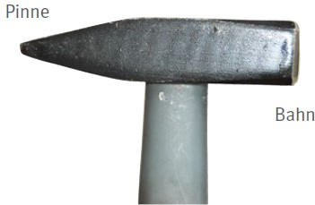
Abb. 12 Bezeichnungen am Hammerkopf
Beim Arbeiten mit einem Hammer wird der durch die schnelle Bewegung des Hammerkopfs entstehende Impuls genutzt. Trifft der Hammer auf einen Gegenstand, wie Nagel oder Blech, wird der Impuls auf diesen übertragen mit dem Effekt, dass der Nagel eingetrieben oder ein Gegenstand verformt wird oder auch der Impuls gezielt, zum Beispiel über einen Meißel, in ein Werkstück geleitet wird.
Hämmer werden durch ihre beschleunigte Masse gefährlich. Gründe für Verletzungsgefahren:
Hämmer gibt es in vielen Bauformen und für verschiedene Anwendungsfälle. Die Namen der Hämmer leiten sich oft von den Anwendungen oder von den Berufen ab.
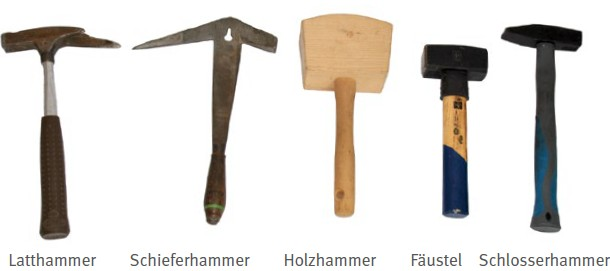
Abb. 13 Hammertypen
Um einen Hammer mit geeigneter Bauform und Gewicht auszuwählen, muss der geplante Einsatzzweck bekannt sein. Für viele Bauformen gibt es Normen, die für die richtige Auswahl genutzt werden können.
Für "Hämmer aus Stahl" gilt zum einen die DIN 1193 mit Ausführungen über
Für die unterschiedlichen Bauformen wird in weiteren Normen differenziert:
Die Norm für einen Schlosserhammer mit Stiel und Keil, Nenngewicht 500 g:
Hammer DIN 1041-500 S
Auch Abmessungen des Auges (Stielaufnahme des Hammerkopfs) und der Stiele sind in den Normen zu finden, wie in den DIN 5111/5112 für Hammerstiele aus Holz. Dort gibt es Festlegungen, zum Beispiel in Bezug auf Gewichte, Abmessungen und auf die sichere Verbindung von Kopf und Stiel durch die Festlegung von Abziehkräften.
Diesen Normen können Hinweise auf die Auswahl des geeigneten Hammers in Bezug auf die gewünschten Anwendungsfälle entnommen werden.
Gibt es für einen Hammertyp keine Bezugsnorm, kann das GS-Zeichen herangezogen und als Qualitätskriterium genutzt werden.
Trifft der Stiel bei einem Fehlschlag auf das Werkstück, kann er beschädigt werden oder sogar brechen. Hämmer mit Stielschutzmanschetten aus Stahl-, Kunststoff- oder Gummiformteilen bieten in solchen Fällen größere Sicherheit (Abbildung 14).
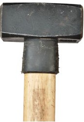
Abb. 14 Stielschutz an einem Fäustel
Für besondere Arbeiten an empfindlichen Werkstoffen sind Hämmer erforderlich, die beim Schlagen keine Spuren auf den geschlagenen Teilen hinterlassen. In solchen Fällen sind Hämmer mit einem entsprechend weichen Kopf aus Holz, Gummi, Kunststoff oder aus einem weichen Metall (z. B. Kupfer) die richtige Wahl. Für Schlagköpfe aus Kunststoff haben sich unter anderem Nylon und Polyurethan als splittersicher bewährt.
In den unterschiedlichen Gewerken und Branchen werden für die Herstellung der Stiele Materialien, wie Holz, Kunststoff, Stahl und Glasfaser, und Kombinationen aus den Materialien angeboten. Bei den meisten Griffen/Stielen zeigt schon das erste Zufassen, ob der Hammer gut in der Hand liegt. Da Arbeiten mit Hämmern oft mit Handschuhen erfolgt, sollte die Griffergonomie einmal mit der bloßen Hand und ebenfalls mit der durch den Handschuh geschützten Hand geprüft werden.
Hämmer dienen dazu, Impulse zu übertragen, deren Größe von der Masse des Kopfs und der Geschwindigkeit beim Auftreffen bestimmt wird.
Die Dynamik der kleineren Hämmer (z. B Latthammer, kleiner Schlosserhammer) belastet immer das Hand-Arm-Schulter-System und die großen Hämmer mit höherer Masse (z. B Vorschlaghammer) belasten auch die Muskeln und Gelenke des ganzen Körpers. Die Höhe der Belastung ist wiederum abhängig von der Häufigkeit der Schläge.
Belastend sind auch die Rückschläge beim Auftreffen auf das zu bearbeitende Material. Über das elastische Verhalten der Hammerstiele werden die Schläge nur zum Teil gemindert. Hier wäre zu prüfen, ob die Aufgabe mit rückschlagfreien Hämmern erfüllt werden kann. Hämmer mit entsprechendem Rückprallverhalten mindern die Gelenkbelastungen beim Aufschlag für Hand, Ellenbogen und Schulter. Ein besonderes Kennzeichen dieser Hämmer ist ein körniges Gut, das sich im Inneren des Kopfes befindet. Dadurch werden die federnden Rückschläge reduziert, nicht aber die Schlagenergie. Außerdem trägt diese Hammerart zur Lärmminderung bei (Abbildung 15).
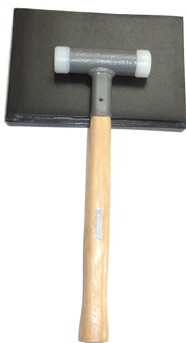
Abb. 15 Rückschlagfreier Hammer
Die genannten Belastungen legen es nahe zu prüfen, ob andere Arbeitsverfahren mit anderen Werkzeugen und entsprechend geringerer Belastung möglich sind.
Die Ergonomie für das Arbeiten mit Hämmern wird aus diesen Gründen durch das Werkzeug selbst kaum verbessert werden können. Oft werden die Hämmer jedoch in Kombination mit anderen Werkzeugen eingesetzt und in diesen Kombinationen ist oft eine ergonomische Gestaltung der Arbeit möglich. Zum Beispiel der Amboss: Er bietet das Widerlager für den Schlag und macht ihn effektiver. Federnde Bauteile wären hingegen ungünstig. Eine ergonomische Gestaltung wäre jedoch durch das Festsetzen des Werkstücks, mit Hilfe von Klemmen, Schraubzwingen, im Schraubstock, auf schweren Unterlagen etc. möglich.
Auch eine günstige Arbeitshöhe, wie auf einer Werkbank, bei der das zu bearbeitende Werkstück gut erkennbar und auf ca. Hüfthöhe bearbeitet werden kann, bietet den ergonomischen Vorteil, dass der Oberarm am Ende der Bewegung eine nahezu senkrechte Position einnimmt.
Bei Arbeitsaufgaben über Kopf ist die Belastung noch einmal erhöht. Eine ergonomische Lösung bringt in solchen Fällen auch das Arbeiten auf einem Podest oder auf einem Gerüst.
Ein Hammer muss bei der Arbeit immer sicher gehalten und geführt werden können. Treten bei der Arbeit Verschmutzungen auf, darf der sichere Halt dadurch nicht beeinträchtig werden. Häufiges Reinigen, zum Beispiel mit einem (feuchten) Lappen, kann daher gefordert sein. Je nach Art der zu erwartenden Verschmutzung durch Staub oder ölige Stoffe sollte ein Hammer mit geeignetem Stiel ausgewählt werden. Bei öligen Verunreinigungen können Holzstiele günstiger als die aus Kunststoff sein. Bestandteile des Öls könnten auf den Kunststoff wie ein Lösemittel wirken. Erfahrungswerte und Informationen aus Produktdatenblättern können für die Auswahl herangezogen werden. Sind "Unverträglichkeiten" ermittelt worden, sollte nur der gegen die verunreinigenden Stoffe resistente Hammerstiel verwendet werden.
Prüfen Sie vor der Arbeitsaufnahme die Befestigung des Hammerkopfs am Stiel. Bewegungen des Hammerkopfs bei gleichzeitigem Halten des Stiels oder auch ein leichter Schlag des Hammers auf Holz oder auf eine Metallplatte machen Mängel in der Befestigung spürbar. Die Sichtkontrolle der Stielbefestigung, wie Ringkeil oder Stift, muss immer ausgeführt werden.
Beachten Sie folgende Besonderheiten: Der rheinische Maurerhammer mit Holzstiel wird zum Beispiel über Nacht in Wasser gelegt, um den sicheren Sitz des Hammerkopfs für den folgenden Arbeitstag zu gewährleisten. Bei Stielen aus Kunststoff bzw. Verbundstoffen sind die Befestigungen oft nicht erkennbar. Deshalb bieten sich zum Arbeitsbeginn die Handprüfung und der Probeschlag als Prüfverfahren an.
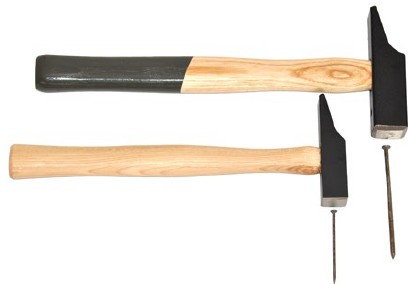
Abb. 16 Hammerkopf passend zur Nagelgröße
Die Sichtprüfung muss auch für den Stiel und den Kopf selbst durchgeführt werden. Absplitterungen am Holz, Kerben oder einfach nur gelöste Kunststoffgriffe bei Verbundgriffen sind meist ebenso leicht erkennbar wie Ausbrüche an Bahn und Pinne der Hammerköpfe.
Wählen Sie den für die Aufgabe passenden Hammer aus. Schiefer- und Latthämmer haben in der Bahn ein Raster von Einkerbungen, die beim Auftreffen auf einen Nagelkopf ein Abgleiten verhindern können. Werden diese Hämmer für eine Aufgabe benutzt, die hohe Impulse (Schlagen auf Schlagschlüssel, siehe Schraubenschlüssel) benötigt, können diese Einkerbungen wie eineSollbruchstelle wirken und Splitter vom Hammerkopf lösen. Das ist besonders gefährlich, weil diese Hammertypen für die Aufgabe eine zu geringe Masse aufweisen. Das macht eine höhere Zahl an (gefährlichen) Schlägen erforderlich. Sind hohe Impulse erforderlich, sind Hämmer mit großer Masse die richtige Wahl. Im beschriebenen Fall ist der Latthammer mit 600 g Masse oder Schieferhammer nicht bestimmungsgemäß genutzt worden. Ein Fäustel mit einer Masse von 1500 g ist hier die richtige Wahl.
Mit Schreinerhämmern werden auch häufig Nägel eingetrieben. Sie weisen kein solches Raster in ihrer Bahn auf. Oft sind die Nägel sehr klein und sie werden mit der speziell geformten Pinne – auch Finne genannt – mit leichten Schlägen angesetzt. Die richtige Wahl sind dann die kleineren Ausführungen des Schreinerhammers. Abbildung 16 zeigt den Größenvergleich zweier Schreinerhämmer: oben 400 g unten 200 g.
Fehlschläge mit dem Hammer können zu Verletzungen führen. Ein einzutreibender Nagel sollte daher immer nah am Kopf gehalten werden, um bei einem Fehlschlag die Finger noch zurückziehen zu können (Abbildung 17).
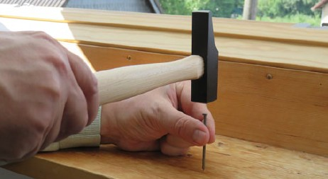
Abb. 17 Nagel oben fassen
Werden schwere Schlosserhammer oder Fäustel zum Schlagen auf Meißel oder Holzhammer zum Schlagen auf Stechbeitel oder vergleichbare Werkzeuge benutzt, sind die Übung und Erfahrung in Bezug auf die Wirkung der Schläge auf das jeweilige Werkstück oder Material besonders wichtig: Während dieser Arbeiten muss die Spitze des Meißels/Stechbeitels beobachtet werden. Der Schlag mit dem Hammer auf das Werkzeug erfolgt dann unbeobachtet, muss also intuitiv erfolgen. Und nicht nur das Treffen des Werkzeugs erfordert die Übung. Wer die "passende" Schlagenergie einsetzen möchte, um die gewünschte Wirkung am Werkstück zu erzielen, benötigt ebenfalls Erfahrung aus dem Umgang mit dem Werkstoff und der Wirkung der Handwerkzeugkombination Hammer und Meißel/Stechbeitel.
Um den Hammer möglichst effektiv einzusetzen, greifen Sie ihn am Ende des Stiels. Die Stiele verfügen an dieser Stelle auch über den – für den Handzugriff – passenden Querschnitt. Dieser "Zugriff" sollte unbedingt trainiert werden.
Besteht während des Einsatzes der Hämmer die Gefahr einer Splitterbildung, müssen Sie eine Schutzbrille tragen. Gehörschutz und/oder Handschuhe können ebenfalls erforderlich sein.
Immer wieder werden Hämmer mit teils erheblichen Mängeln verwendet. Auch mit einem defekten Hammer lassen sich die notwendigen Schläge ausführen. Vielleicht werden die Mängel deshalb nicht vor einem weiteren Einsatz behoben.
Einige Anlässe für den Instandsetzungsbedarf sind unter 2.2.3 Verwendung der Hämmer beschrieben. Mängel, die während der Prüfung – vor der Arbeitsaufnahme – erkannt worden sind, sollten eine sofortige Aussonderung, eine fachgerechte Instandsetzung oder eine Ersatzbeschaffung zur Folge haben.
Trotz des normgerechten Härteverlaufs innerhalb des Hammerkopfs können von Pinne oder Bahn scharfe Splitter abspringen, die zu bleibenden Verletzungen, besonders an den Augen, führen können. Ursache kann ein Schlag auf einen härteren Werkstoff oder ein Treffer nur mit dem Randbereich von Bahn oder Pinne sein. Die meist leicht zu erkennenden Ausbrüche sind immer wieder Ursprung für neue Ausbrüche. Der Hammer hat – wegen der nun an den Schadstellen fehlenden Härte – nicht mehr die durch normgerechte Herstellung gesicherte Qualität. Eine Reparatur durch Nachschleifen kann diesen Mangel nicht beseitigen. Der Hammer/Hammerkopf muss ersetzt werden. Verschlissene Schlagköpfe von Schonhämmern können ausgetauscht werden.
Mängel an dem Hammerstiel können auch Auslöser für Verletzungen sein. Wenn sich beim Arbeiten der Hammerkopf löst, sind alle Personen im Arbeitsumfeld gefährdet. Eine fachgerechte Instandsetzung von Hämmern mit Holzstiel ist einfach auszuführen. Der Holzstiel wird durch einen Keil befestigt, der ihm im Auge des Hammerkopfs einen kraft- und formschlüssigen Halt gibt. Keile aus Metall mit besonderen Rippen oder Widerhaken gewährleisten eine zuverlässige Befestigung, wenn die Flachkeile schräg zur Hammerkopfachse eingeschlagen sind. Noch sicherer ist eine Ausführung mit einem Ringkeil, der das Holz des Stiels gleichmäßig nach allen Seiten an das Auge des Hammerkopfs presst (Abbildung 18).
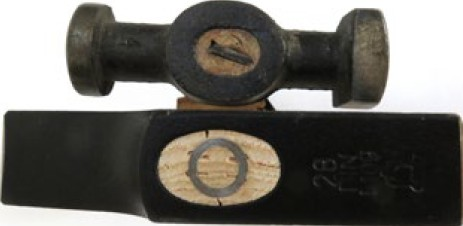
Abb. 18 Keile aus Metall befestigen den Stiel im Auge des Hammerkopfs
Verleimte Holzkeile sind nur bei Hämmern aus Holz normgerecht.
Der richtige Feuchtegehalt des Stieles ist beim Einstielen besonders wichtig: Zu feuchtes Stielholz schrumpft beim Trocknen und der Hammerkopf sitzt in der Folge locker. Zu trockenes Holz ist brüchig und der Stiel kann beim Schlag brechen.
| Infobox |
|
Werkzeuge wie Meißel, Körner, Splinttreiber und Nieteisen werden, wie Hämmer, den Schlagwerkzeugen zugeordnet. Ihre jeweilige Form ist dem Verwendungszweck angepasst. Zur Beschreibung dienen die Begriffe Arbeitsende, Greifbereich und Schlagende. Das Schlagende weist eine geringere Härte als das Arbeitsende auf.
Diese Handwerkszeuge sind dazu bestimmt, die mit einem Hammer erzeugten Schlagimpulse auf konkrete Stellen eines Werkstücks zu übertragen. Arbeitsziele können das Trennen, das Verformen oder das Verschieben (Treiben) des Werkstücks sein.
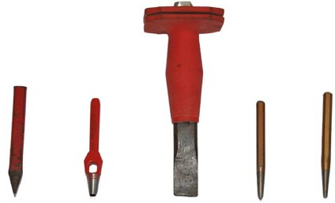
Abb. 19 verschiedene Schlagwerkzeuge
Diese Gruppe der Schlagwerkzeuge entwickelt Gefahren aufgrund der – während der Benutzung aufgebrachten – Schlagenergie und der Form ihrer Arbeitsenden.
Gründe für Verletzungsgefahren:
Die bekanntesten Ausführungen dieser Schlagwerkzeuge sind:
Für die Auswahl des Schlagwerkzeugs müssen die geplante Arbeitsaufgabe und das Arbeitsverfahren – trennen, verformen, treiben – bekannt sein. Für einige Arbeiten, wie beim Nieten, ist ein Werkzeug nicht ausreichend. Das zu bearbeitende Werkstück und der Werkstoff müssen bei der Auswahl ebenso berücksichtigt werden. Mit diesen Angaben kann auf die Bauform und die erforderlichen Abmessungen des Schlagwerkzeugs geschlossen werden. Die Schlagwerkzeuge müssen den Beanspruchungen gewachsen sein, die sich an ihrem Schlagende – dem Kopf – und an ihrem Arbeitsende – der Spitze – ergeben.
Für diese Gruppe der Schlagwerkzeuge geben Normen viele Anforderungen an das Werkzeug vor. Deshalb kann in den meisten Fällen über die Festlegung des Einsatzzwecks die entsprechende Norm zur Festlegung von Qualitätsmerkmalen herangezogen werden. Zu nennen ist die DIN 7255 "Schlagwerkzeuge-Technische Lieferbedingungen", die Anforderungen an Werkstoff und Härte aufführt.
Meißel, die den DIN-Normen entsprechen, sind mit Namen oder Zeichen der Herstellfirma zu kennzeichnen. Zumindest auf der (kleinsten) Verpackung ist die Nummer der Norm anzugeben, zum Beispiel:
Spitzmeißel DIN 7256-250
Wegen der Verletzungsgefahr durch Fehlschläge sollten Meißel mit einem Handschutz eingesetzt werden. Der Handschutz bietet meistens einen profilierten Griff und der bietet einen besseren Halt als die Oberfläche des Meißels. Ausführungen mit einem Teller mindern die Verletzungsgefahr bei Fehlschlägen.
Meißel mit verklebtem Handschutz sollten denen mit aufgestecktem vorgezogen werden. Der Vorteil von aufgestecktem Handschutz ist zwar, dass er auf verschiedenen Meißeln benutzt werden kann. Der Nachteil: Ein aufgesteckter Schutz kann auf einem Meißel mit gleichbleibendem Querschnitt nach jedem Schlag immer weiter zum Schlagende wandern. Aus diesem Grund muss der Schutz häufig wieder in bessere Arbeitsposition gebracht werden.
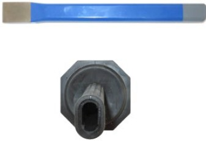
Abb. 20 Meißel mit Handschutz: profilierter Griff mit achtkantigem Handschutzteller
Ist der Handschutzteller prismenartig und nicht rund, ist ein Wegrollen des abgelegten Meißels erschwert (Abbildung 20).
Ist die Auswahl getroffen worden, sollte noch geprüft werden, ob die vorhandenen Hämmer für die Anwendung geeignet sind oder noch beschafft werden müssen.
Der Griffbereich der Schlagwerkzeuge ist die Kontaktstelle zum Menschen. Für große Meißel sollten Ausführungen bevorzugt werden deren Oberfläche im Griffbereich kunststoffbeschichtet ist.
Die hier beschriebenen Schlagwerkzeuge werden in Kombination mit Hämmern verwendet. Deshalb können die Ausführungen in Bezug auf die Ergonomie bei Arbeiten mit Hämmern hier ebenso herangezogen werden. Besonders die Körperhaltung sollte sich daran orientieren, dass der Auftreffpunkt des Hammers auf das Schlagende des Schlagwerkzeugs bei kräftigen Schlägen nur so hoch sein darf, dass der Oberarm am Ende eine nahezu senkrechte Position einnimmt. Bei der Arbeitshöhe für das zu bearbeitende Werkstück, zum Beispiel in einem höhenverstellbaren Schraubstock, ist daher nicht die Spitze des Meißels, also der Ort der Sehaufgabe entscheidend. Der Blick dorthin muss jedoch jederzeit möglich sein. Beim Abbruch eines Mauerwerks ist es deshalb sinnvoll, Meißel in unterschiedlichen Längen bereitzustellen.
Für Arbeiten, zum Beispiel mit Durchtreibern, Körnern oder Locheisen, ist – wenn es sich um kleine Ausführungen handelt – eine geringe Schlagenergie erforderlich. Ein Handschutz ist dann in den meisten Fällen nicht nötig oder sogar störend. Eine einfache Kunststoffbeschichtung ohne Teller kann die Griffigkeit verbessern. Kleine Splinttreiber werden meistens nur mit einem Griff der Finger gehalten und geführt. In diesem Anwendungsfall ist die Körperhaltung günstig, die ein gutes Erkennen sichert. Die Empfehlung in Bezug auf einen senkrechten Oberarm am Ende des Schlags gilt in diesem Fall nicht.
Da bei der Anwendung von Schlagwerkzeugen die Sicht auf das zu bearbeitende Werkstück für ein gutes Arbeitsergebnis entscheidend ist, gehört während dieser Arbeit eine ausreichende und blendfreie Beleuchtung zur Ergonomie.
Bei einigen Anwendungen von Schlagwerkzeugen ist die Sehaufgabe bedeutsam. Aus Gründen des Arbeitsschutzes und der Ergonomie wird eine qualitativ hochwertige Schutzbrille mit gutem Tragekomfort empfohlen. Für alle, die Brillen mit Sehstärke tragen, müssen auch spezielle Schutzbrillen oder solche mit entsprechender Sehstärke bereitgestellt werden.
Bevor ein Meißel oder ein anderes Schlagwerkzeug zum Einsatz kommt, muss es, wie jedes Handwerkzeug, geprüft werden. Achten Sie am Arbeitsende (Spitze) auf Ausbrüche oder Risse. Am Schlagende steht die Ausbildung eines "Barts" im Fokus: Das weiche Schlagende wird von den Schlägen mit der gehärteten Bahn eines Hammers allmählich verformt, und es bildet sich am Außenumfang ein Grat. Mit solchen Schäden an der Spitze und/oder einem ausgeprägten Grat am Schlagende darf nicht gearbeitet werden. Der Meißel muss vor einem weiteren Einsatz zunächst instandgesetzt werden.
Eine Gefährdung für Augen Haut und Hände durch Splitter ist aber auch bei Arbeiten mit einem als gut bewerteten Schlagwerkzeug, wie dem Meißel, gegeben. Kraftvolle Fehlschläge können die Ursache dafür sein oder auch Absplitterungen aus dem bearbeiteten Werkstück. Deshalb sind eine geschlossene Arbeitskleidung und das Tragen von Schutzhandschuhen zu empfehlen. Das Tragen einer Schutzbrille hingegen ist Pflicht. Zum Schutz vor Handverletzungen durch Fehlschläge oder damit das Werkzeug während des Arbeitsvorgangs nicht wegrutscht, sollten Meißel mit Handschutz bevorzugt werden.
Weil Schlagwerkzeuge wie Durchschlag, Körner, Punzierwerkzeuge oder Locheisen mit sehr kontrolliert und "gefühlvoll" ausgeführten Schlägen bedient werden, fällt während dieser Arbeiten die Schlagenergie deutlich geringer aus. Deshalb genügt häufig ein leichter Schutzhandschuh. Weil die Sehaufgabe mit stetiger Kontrolle des Ergebnisses besonders wichtig ist, muss auch während der Arbeit mit niedriger Schlagenergie eine Schutzbrille getragen werden.
Splinttreiber und Durchschläge werden üblicherweise in Satz-Kästen oder -Blöcken aufbewahrt, an denen die jeweilige Größe angegeben ist. Die Wahl der richtigen Größe ist nicht nur wegen der Qualität der Arbeit von Bedeutung. Ein zu groß gewählter Durchtreiber führt nicht zum gewünschten Arbeitsergebnis und schädigt die Werkstückoberflächen.
Oft sitzen Splinte sehr fest und die Splinttreiber werden dann auch mit größerem Hammer geschlagen. Splinttreiber mit kleinem Durchmesser können sich wegen ihres langen und zylindrisch geformten Arbeitsendes bei Schlägen mit hoher Energie biegen. Diese Verformung ist in den meisten Fällen bleibend und der Durchschlag oder der Durchtreiber muss sofort ausgesondert werden, denn aufgrund der Härtung besteht die Gefahr des Brechens und es entstehen die damit verbundenen Verletzungsrisiken (Abbildung 21).
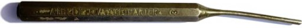
Abb. 21 Werkzeug mit Verformung sofort aussondern
Die "Vorbehandlung" bei festsitzenden Splinten mit Rostlöser und/oder durch Anwärmen des Werkstücks ist effektiver als hohe Schlagenergie. Unterweisen Sie deshalb Auszubildende und Personen, die am Beginn ihrer beruflichen Laufbahn stehen in diese Aufgabe. Die Theorie, zusammen mit praktischen Übungen an der Werkbank – natürlich mit Schutzbrille – sind eine lohnende Investition in die Zukunft.
Die Arbeit mit Schlagwerkzeugen erzeugt oft hohe Geräuschpegel beziehungsweise Lärmpeaks und deshalb muss, abhängig von der Arbeitsaufgabe, Gehörschutz getragen werden.
Auf keinen Fall dürfen Bohrer oder Gewindebohrer – auch nicht ausnahmsweise – als Körner oder Splinttreiber verwendet werden. Ihre Werkstoffe besitzen nicht die erforderliche Zähigkeit eines Schlagwerkzeugs. Sie können bei der Schlagbelastung splittern oder brechen.
Staub und Späne sind zur Vermeidung von Korrosion nach Beendigung der Arbeit mit einem Lappen zu entfernen. Das Ölen oder Einfetten der Schlagwerkzeuge sollte nur bei längerer Einlagerung erfolgen. Grundsätzlich sind sie im Arbeitseinsatz öl- und fettfrei zu halten.
Das Schlagende des Meißels besitzt eine geringere Härte als der Hammer, um an der Bahn des Hammers ein Absplittern zu verhindern. Infolgedessen bildet sich während der Nutzungszeit ein "Bart" am Schlagende des Meißels. Schleifen Sie deshalb das Schlagende nach, bis es eine Fase aufweist.
Das Nachschleifen des Arbeitsendes sollte stets "nass" erfolgen, damit die Härte nicht durch Ausglühen verloren geht. Ein Ausglühen und Nachhärten des Arbeitsendes gebrauchter Meißel erfordert Fachkunde und viel Erfahrung mit dem Werkstoff. Die Instandsetzung muss sich – in Bezug auf die Härte – an der Anforderung der Norm DIN 7255 orientieren.
| Infobox |
|
Schraubendreher, auch häufig Schraubenzieher genannt, und Schraubenschlüssel gehören nach der Norm DIN 898 der Gruppe der Schraubwerkzeuge an. Die Komplexität der Gruppe der Schraubwerkzeuge zeigt sich in der Vielzahl von Normen.
Schraubendreher werden zum Drehen von Schrauben (oder Muttern) verwendet, um Schraubverbindungen herzustellen oder zu lösen.
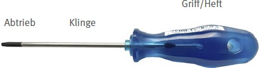
Abb. 22 Bezeichnungen am Schraubendreher
Haupteile eines Schraubendrehers sind der Griff und die Klinge. Die Klingen enden mit dem Abtrieb, der zu bestimmten Schrauben passt und sie drehen lässt, sie antreibt (Abb. 22). Der Werkstoff der Klinge und deren Härte muss das zu einer Verschraubung passende Drehmoment sicher übertragen können und entsprechend gefertigt sein. Unter anderem bietet die DIN ISO 2380-1 Hinweise zu Härte und Prüfdrehmoment für Schraubendreher, die bei Schrauben mit Schlitz eingesetzt werden. Die anzugebende Kennzeichnung dieser Schraubendreher ist in der DIN ISO 2380-2 aufgeführt.
Für einen flexiblen Einsatz bei der Verarbeitung von Schrauben mit unterschiedlichen Köpfen gibt es Griffstücke, deren Klinge in einer Vierkant- oder Sechskantaufnahme endet. Für diese Aufnahme werden Einsätze, wie Bits, mit unterschiedlichen Abtriebsformen angeboten.
Innensechskantschlüssel nach DIN ISO 2936 werden in der Normung den Schraubendrehern zugeordnet.
Diese Gruppe der Schraubwerkzeuge wird durch ihre Klingen gefährlich.
Gründe für Verletzungsgefahren:
In dieser DGUV Information wird lediglich auf die gebräuchlichsten Schraubendreher (Abbildung 23) und einige Sonderbauformen eingegangen.
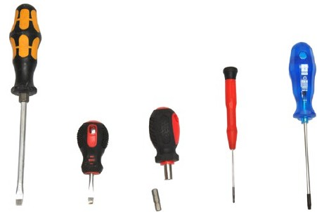
Abb. 23 gebräuchliche Schraubendreher
Die Auswahl der Schraubendreher orientiert sich in erster Linie an der Kopfform der zu drehenden Schrauben und Muttern. Üblich sind die Benennungen der Schraubendreher nach der zugehörigen Schraubenart: z. B. Schlitzschraubendreher, Kreuzschlitzschraubendreher oder auch TX-Schraubendreher. Ausschließlich der zur Schraube passende Abtrieb des Schraubendrehers wird eine wieder zu lösende Verbindung herstellen, ohne dabei die zu verbindenden Bauteile und die Schraube selbst zu beschädigen.
Ein weiteres wichtiges Auswahlkriterium ist, neben der Schraubenart, die Zugänglichkeit. Entsprechend können sehr kurze oder sehr lange Schraubendreher sinnvoll sein. Sonderformen, wie Winkelschraubendreher oder Bit-Knarren, können in sehr engen (Montage-)Räumen die einzige Möglichkeit bieten, Schrauben zu drehen.
Das über den Griff eingeleitete Drehmoment wird auf die Klinge und dann zum Abtrieb weitergeleitet. Ein weiteres Auswahlkriterium ist daher das für den Schraubendreher in Normen aufgeführte Prüfdrehmoment.
Mit dem Schraubendreher wird kein konkretes Drehmoment übertragen. Sind für eine Schraubverbindung Anzugsdrehmomente vorgegeben, wird ein entsprechendes Werkzeug dafür benötigt. Der Schraubendreher dient dann der schnellen Vorarbeit für den folgenden präzisen Arbeitsschritt mit einem Drehmomentschlüssel.
Verlangt eine Montage wegen unterschiedlicher Schraubenköpfe immer wieder andere Klingen, kann die Auswahl auf einen Schraubendreher für unterschiedliche Einsätze oder Bits fallen. Wieder wird die Schraubenart zu einem Hauptkriterium, jetzt jedoch, um den geeigneten Einsatz oder den Bit auszuwählen.
Sind viele Drehungen erforderlich, kann ein Schraubendreher mit Ratschenfunktion die Arbeit erleichtern (Abbildung 24). In solchen Fällen sollte auch an den Einsatz von Akku- oder elektrischen Schraubern gedacht werden. Wenn Montagen in einer Fließfertigung immer wieder gleichartige Verschraubungen erfordern, sind die Akku- und die elektrische Version den Handwerkzeugen vorzuziehen. Sie können auch in Ausführungen mit Drehmomenteinstellung/-begrenzung beschafft werden.
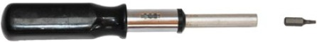
Abb. 24 Schraubendreher mit Ratschenfunktion
Ausführungen mit Sechskant und/oder durchgehender Klinge und Schlagkopf können das Lösen festsitzender Schraubverbindungen erleichtern (siehe Abbildung 26 unter 2.4.3 Verwendung der Schraubendreher).
Wegen der Vielfalt in den Ausführungen (und Normen) ist die Erfahrung der Beschäftigten und eine gute Fachberatung durch vertraute und zuverlässige Werkzeughändler der schnelle Weg, einen geeigneten Schraubendreher auszuwählen. Dafür wird die richtige und vollständige Bezeichnung benötigt, zum Beispiel für einen Schlitzschraubendreher:
Schraubendreher ISO 2380-2 A 1,2 × 8 H
Die Normen können dann im Zweifel zur Klärung herangezogen werden.
Wie bei allen Handwerkzeugen ist auch beim Schraubendreher die Prüfung der Griffergonomie der erste Schritt, um die Eignung zu bewerten. Griffproben, mit und ohne Arbeitshandschuh, helfen bei der Auswahl. Das notwendige Drehmoment kann am besten über einen zur Hand passenden ergonomischen Griff (Abbildung 25) eingeleitet werden.
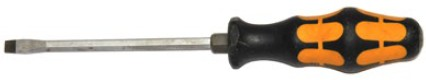
Abb. 25 Die Ergonomie des Griffs muss zur Hand passen
Für die oben aufgeführten Innensechskantschlüssel gibt es Ausführungen mit T-Griff. Schraubendreher ohne ausgeprägten ergonomischen Griff können für Arbeiten ohne großen Kraftaufwand problemlos eingesetzt werden. Sind jedoch hohe Handkräfte aufzubringen, können Kanten oder kurze Hebel hohen Druck auf die Hand ausüben, der sogar zu Verletzungen der Gefäße in den Händen führen kann.
Für eine ergonomische Gestaltung der Arbeit mit Schraubendrehern soll deshalb auch immer die erforderliche Handkraft und die Druckverteilung auf die Handflächen berücksichtigt werden. Sind hohe Kräfte zu erwarten, soll ein Werkzeug mit Hebelwirkung und gutem Griff, wie eine Umschaltknarre mit Schraubeinsatz/Bit, die Aufgabe erleichtern. Der Schraubendreher dient dann der Vor- beziehungsweise der Nacharbeit mit geringerem Kraftaufwand.
Zur ergonomischen Gestaltung gehört auch eine gute Beleuchtung. Besonders die Reflexblendung, wie bei der Bearbeitung von Bauteilen mit glänzenden Flächen, gilt es zu vermeiden.
Die Arbeitsvorbereitung, wie das Zurechtlegen der erforderlichen und geeigneten Werkzeuge, ist entscheidend für ein gutes Arbeitsergebnis und eine sichere Ausführung. Erfahrene Beschäftigte können ihr Wissen vermitteln und auf diese Weise für das sichere Arbeiten einen wichtigen Beitrag leisten.
Das zu bearbeitende Bauteil muss gegen Verdrehen gesichert werden, zum Beispiel, wenn es in einen (höhenverstellbaren) Schraubstock eingespannt ist – gegebenenfalls mit Bauteilschutz für die Spannbacken. Das sorgt für Arbeitssicherheit bei der Schraubarbeit.
Werden häufig bauähnliche Teile bearbeitet, können Vorrichtungen die Teile sicher halten. Diese Vorrichtungen können über Steckverbindungen auf einem Werktisch fixiert werden. Werktische mit flexibler Arbeitshöheneinstellung ermöglichen ein präzises – durch die Sehaufgabe geprägtes – Arbeiten mit eher geringem Kraftaufwand und kleinen Werkzeugen. Sind hohe Kräfte aufzubringen, kann der Tisch entsprechend niedriger eingestellt werden.
Um festsitzende Schrauben zu lösen, muss zunächst das Bauteil sicher fixiert sein. Die Gefährdung der Augen durch Splitter wird mit einer Schutzbrille verhindert. Erst dann wird mit dem Schraubendreher/Bit und einem genau passenden Abtrieb das Drehmoment auf die Schraube gebracht. Der Schraubenkopf soll dabei nicht beschädigt werden. Deshalb soll das Herausrutschen aus dem Antrieb der Schraube über den Druck auf den Schraubendreher, und somit auf den Abtrieb, verhindert werden. Das Moment sollte dann nicht ruckartig eingeleitet, sondern allmählich erhöht werden. Wenn bei festsitzenden Schrauben die erforderliche Handkraft trotz eines ergonomischen Handgriffs nicht ausreicht, können Ausführungen mit einer durchgehenden Klinge und einem Sechskant (Abbildung 26) mit einem Schraubenschlüssel zur Unterstützung die richtige Wahl sein. Über die durchgehende Klinge kann auf den Schlagkopf mit einem Hammer ein Schlag auf die Schraube erfolgen, um die Gewindegänge zu lösen. Ein über den Sechskant geschobener Ringschlüssel kann ein höheres Drehmoment einleiten lassen.
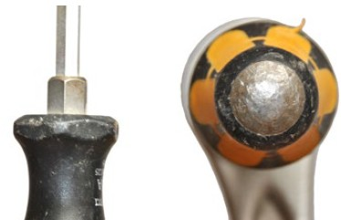
Abb. 26 links: Sechskant an der Klinge des Schraubendrehers; rechts: Schlagkopf am Griffende
Gelingt das Vorgehen nicht, sollten sich unerfahrene Beschäftigte bei den Erfahrenen Rat suchen. Solange der Schraubenkopf nicht beschädigt ist, können einige Verfahren zur Lösung beitragen:
Die Griffe, die Klingen und die Abtriebe müssen sauber und fettfrei sein: eine Reinigung wird nicht nur am Anfang und am Ende der Arbeitsschicht, sondern auch im Verlauf des Arbeitsprozesses erforderlich sein.
Schraubendreher mit beschädigten Griffen können nicht repariert werden. Bei Schraubendrehern mit Wechselklinge ist es möglich, mit einem neuen Griff die Wechselklingen weiterhin zu nutzen.
Schraubendreher mit abgearbeiteten Abtrieben und defekte oder verschlissene Bits können nicht nachgearbeitet werden und müssen entsorgt werden.
Die Instandhaltung der Schraubendreher beschränkt sich daher auf die Pflege und die Kontrolle auf Verschleiß.
| Infobox |
|
Schraubenschlüssel gehören, wie die Schraubendreher, nach der Norm DIN 898 der Gruppe der Schraubwerkzeuge an. In vielen weiteren Normen sind Informationen, wie Maße, Funktionen und Einsatzzweck, definiert. In diesem Kapitel werden auch Bauformen wie Umschaltknarren, Antriebsteile und Gelenkstücke behandelt.
Schraubenschlüssel werden zum Drehen von Schrauben und Muttern verwendet, um Schraubverbindungen herzustellen oder zu lösen. Es handelt sich dabei um Handwerkzeuge, die für die Kraft der Hand ausgelegt sind. Nur solche Schraubwerkzeuge, die ausdrücklich für den Maschinenbetrieb geeignet sind, dürfen auch dafür eingesetzt werden.
Viele Schraubenschlüssel haben keinen ausgeformten Griff.
Verstellbare Maulschlüssel können eine große Bandbreite von Schlüsselweiten bedienen, eignen sich aber nicht gut für präzise Ausführungen. Für Vormontagen sind sie bedingt geeignet.
Diese Gruppe der Schraubwerkzeuge wird durch ihre Masse und die übertragbaren hohen Kräfte/Drehmomente gefährlich.
Gründe für Verletzungsgefahren:
Schraubenschlüssel – bekannte Ausführungen:
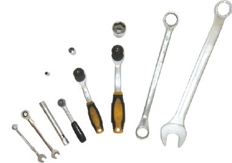
Abb. 27 bekannte Schraubwerkzeuge
Die Auswahl der Schraubenschlüssel richtet sich in erster Linie nach den zu drehenden Schrauben oder Muttern mit ihrer Schlüsselweite und ihrer Zugänglichkeit.
Das Werkzeug muss den auftretenden Drehmomenten angepasst sein. Das Risiko eines Werkzeugbruchs und damit einer Verletzung ist bei Schraubenschlüsseln mit hohem Prüfdrehmoment am geringsten. Die zum Werkzeug angegebenen Normen geben Aufschluss über die zugrundeliegenden Prüfdrehmomente. Ein Beispiel: Für einen Doppelmaulschlüssel mit 17er Schlüsselweite beträgt das Prüfmoment, bei einer Ausführung gemäß DIN 895, mindestens 53,5 Nm und bei Ausführung nach DIN 3110 mindestens 107 Nm.
Bei einem Einmaulschlüssel der Schlüsselweite 18 würde die Bezeichnung lauten:
Schlüssel DIN 894-18
Schlüssel DIN 3114-18
Das Werkzeug muss – laut der Norm – dauerhaft und lesbar mit der Angabe der Herstellfirma und der Schlüsselweite versehen sein. Die Norm kann auf das Werkzeug geprägt oder auf der Verpackung angegeben werden. Für einige Werkzeuge haben die Herstellfirmen weitere Angaben erstellt.
Da die Ausführungen (und Normen) besonders vielfältig sind, ist es in Bezug auf eine schnelle und sichere Auswahl besonders wichtig, auf die Erfahrung der Beschäftigten und eine gute Fachberatung durch den Werkzeughandel zurückzugreifen. Firmen, die Werkzeuge herstellen, veröffentlichen viele Daten zu ihrem Werkzeugangebot in Katalogen, die oft als Download über das Internet angeboten werden.
Schlüssel oder Antriebsteile mit ausgeformten Griffen sollten denen, ohne ausgeformte Griffe, vorgezogen werden. Das gilt besonders für die Anwendung bei Schraubverbindungen, die hohe Kräfte/Drehmomente erfordern. Sicherheit bei der Anwendung von Knarren, Quergriffen, Gelenkstücken und Verlängerungen ist nur gegeben, wenn alle Einzelteile des Satzes die in den DIN-Normen festgelegten Mindestanforderungen – in Bezug auf Prüfdrehmoment, Härte und auch Toleranzen – erfüllen. Um das Abrutschen der aufgesteckten Nüsse oder der Verlängerungen vom Antriebsvierkant zu verhindern, sollten sie – unter Anwendung der Norm DIN 3120 – an den vier Innenflächen mit Kugelfangrillen oder anderen Arretierungen ausgestattet sein. Darüber hinaus spielen bei der Auswahl noch weitere Punkte eine Rolle: Wenn beispielsweise überkopf mit Kreuzgelenken (handbetätigtes Kardangelenk DIN 3123) gearbeitet werden muss, sollten die Kreuzgelenke in den Gelenkverbindungen Schrauben aufweisen, die – leicht angezogen – ein "Wegkippen" im Gelenk verhindern.
In Bezug auf die Knarren oder die Steckgriffe bietet der Markt Ausführungen mit ergonomischen Griffen an, die bevorzugt eingesetzt werden sollten. An beengten Montagestellen sind Knarren mit kleinen Arbeitswinkeln nützlich. Knarrenkästen ermöglichen mit unterschiedlichen Antriebsteilen, Verlängerungen, Gelenken und auswechselbaren Steckschlüsseleinsätzen (Nüsse) Kombinationen, mit denen verschiedene Montage- bzw. Demontagesituationen gut bewerkstelligt werden können. Die Kästen bieten eine übersichtliche Anordnung und sollten als Grundausstattung einer Einzelbeschaffung vorgezogen werden. Nüsse für den Einsatz mit Schlagschraubern sowie Verlängerungen erfordern eine besondere Festigkeit (Nüsse sind schwarz, nicht verchromt).
Auch hier gilt es, zunächst zu prüfen, wie die Griffergonomie beschaffen ist. Wie oben bereits erwähnt, gibt es bei vielen Schraubenschlüsseln keinen ausgeformten Griff. Wenn zum Lösen oder Festziehen hohe Kräfte aufgebracht werden müssen, sollten daher Schraubwerkzeuge mit ergonomisch gestalteten Griffen zum Einsatz kommen.
Während der Vorarbeit zur Herstellung einer Schraubverbindung wird in den meisten Fällen eine geringe Kraft benötigt und kann mit Maul-, Ring- oder auch Ratschenschlüssel ohne ausgeformte Griffe ausgeführt werden. Die hohen Handkräfte, die eingesetzt werden, um das Festziehmoment zu erreichen, können dann über einen Drehmomentschlüssel mit ergonomisch gestaltetem Griff handschonend und in guter Qualität ausgeführt werden.
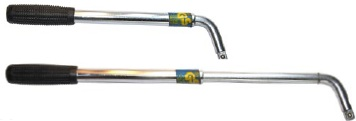
Abb. 28 teleskopierbares Griffstück mit ergonomischer Griffgestaltung
Beim Lösen von Schraubverbindungen wird gleich zu Beginn ein hoher Kraftaufwand benötigt. Dafür kann ein Werkzeug mit Verlängerungen und ergonomischer Griffgestaltung genutzt werden. Entweder ist das Werkzeug schon mit der Verlängerung konstruiert worden (Abbildung 28) oder es werden Griffstücke (Aufsteckrohr) verwendet, die mit unterschiedlichen Aufsteckschlüsseln (Zugringschlüssel Abbildung 29) ausgerüstet werden können.
Drehmomentschlüssel sind nicht für das Lösen festsitzender Schrauben/Muttern ausgelegt.
Nachdem die Schraubverbindung gelöst worden ist, können im Anschluss die oben für die Vorarbeit genannten Werkzeuge auch für die Nacharbeit genutzt werden.
Arbeiten mit großen Schraubenschlüsseln ist oft mit dem Aufbringen von Ganzkörperkräften verbunden. Die hohen Handkräfte werden nur erreicht, wenn eine Abstützung über den Oberkörper bis hin zu den Füßen möglich ist. Deshalb sollte die Aufgabe immer nur bei arretiertem Bauteil und in "geeigneter" Körperhaltung erfolgen. Auch in diesem Fall bietet ein höhenverstellbarer Schraubstock oder eine höhenverstellbare Werkbank eine ergonomische Lösung.
Während der Arbeiten am fest eingespannten Bauteil können mit Gelenkknarren ergonomisch günstige Hand-Armstellungen erreicht werden.
Zur ergonomischen Gestaltung gehört dann auch die ausreichende Beleuchtungsstärke. Aufgrund der Reflexblendung bei Bauteilen mit glänzenden Flächen muss das Licht möglichst diffus über Leuchten mit hoher Lichtstreuung erfolgen.
Viele Schraubwerkzeuge lassen hohe Handkräfte unter Nutzung des Hebelgesetzes zum Aufbringen hoher Drehmomente zu. Hohe Handkräfte mit entsprechend hoher Zugkraft oder Druckkraft am Werkzeug erzeugen einen hohen Druck auf die Haut und die Gefäße der Hände. Werden Werkzeuge ohne (ergonomisch) geformte Griffe genutzt, kann das zu Verletzungen führen.
Beim Lösen mit hohem Kraftaufwand kann zunächst ein Versuch mit zum Beispiel einem Ringschlüssel und Handschuhen und zusätzlich einem die Hand schützenden Lappen erfolgen. Ruckartiges Reißen oder Stoßen darf dann jedoch nicht die angewandte Technik sein. Erhöhen Sie die Zug- oder Druckkraft allmählich und brechen Sie den Versuch ab, wenn die Kraft nicht mehr ohne Bedenken für das eigene "Handwohl" erhöht werden kann. In diesen Fällen ist der Ringschlüssel nicht das passende Werkzeug. Im weiteren Verlauf sollten Werkzeuge eingesetzt werden, die über einen längeren Hebel und idealerweise über ergonomisch geformte Griffe verfügen. In diesem Fall sind Zugringschlüssel mit dem dazu gehörigen Aufsteckrohr geeignet (Abbildung 29 oben).
Führt auch ein Versuch mit diesen Werkzeugen nicht zum Erfolg oder ist die Montagestelle für die ausladenden Zugringschlüssel unzugänglich, können Schlag-Maulschlüssel (Schlüssel DIN 133-80, im Beispiel 80 für die Schlüsselweite) oder ein Schlag-Ringschlüssel (Abb. 29 unten: Schlag-Ringschlüssel DIN 7444) eingesetzt werden. Diese Schlüssel (und nur diese) sind für Schläge mit schwerem Hammer geeignet.
Beim Lösen von festen Schraubverbindungen gilt:
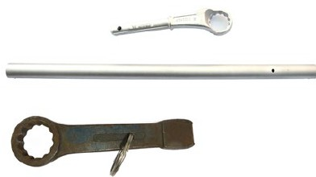
Abb. 29 oben: Zugringschlüssel mit Aufsteckrohr, unten: Schlag-Ringschlüssel
Helfen diese Hinweise nicht, sollten keine weiteren Versuche erfolgen, um Verletzungen aber auch Schäden am Werkstück auszuschließen. Eine Beratung mit in dieser Sache erfahrenen Kolleginnen und Kollegen kann oft weiterhelfen.
Solange der Schraubenkopf nicht beschädigt ist, können einige Verfahren zur Lösung beitragen, wie sie zum Teil schon bei der Arbeit mit Schraubendrehern beschrieben worden sind:
Beim Anziehen der Schrauben/ Muttern kann ein passender Drehmomentschlüssel zur Sicherung der Qualität der Verbindung und zum Schutz der Hände für die letzten Bewegungen genutzt werden. Ist das geforderte Drehmoment sehr hoch, kann mit einem Drehmomentvervielfältiger (Getriebe) die erforderliche Handkraft begrenzt werden.
Viele Schraubverbindungen werden mit Schraube und Mutter hergestellt. Soweit das Bauteil das Mitdrehen der Schraube nicht konstruktiv verhindert, muss häufig mit zwei Schraubenschlüsseln gearbeitet werden. In unsicheren Situationen ist es zielführend, sich von Mitarbeitenden unterstützen zu lassen.
Unter den in vielen Branchen verwendeten Schraubwerkzeugen gibt es auch speziell geformte, die dem Verwendungszweck angepasst sind. Die Abbildung 30 zeigt einige Schlüssel aus dem Heizung-Sanitär-Gewerk. Solche Spezialwerkzeuge sollen auch nur für den Zweck verwendet werden, für den sie bestimmt sind, und nicht für allgemeine Verschraubungsarbeiten.
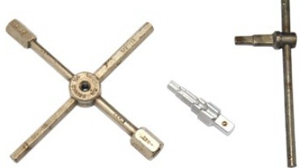
Abb. 30 Spezialschlüssel aus dem Heizungs-Sanitäts-Gewerk
Spezialwerkzeuge, wie Abzieher, werden in Kombination mit einem Schraubenschlüssel eingesetzt. Zum Beispiel verpflichten einige Herstellfirmen Vertragswerkstätten zum Einsatz von bestimmten Spezialwerkzeugen. Es gibt auch "Universal-Spezialwerkzeuge", die bei unterschiedlichen Fahrzeugmarken/Maschinen fachgerecht genutzt werden können. Die Faustregel lautet: auf den konkreten Anwendungsfall ausgelegte Spezialwerkzeuge den universell-tauglichen vorziehen. Nutzen Sie aber in jedem Fall die Spezialwerkzeuge zusammen mit den Schraubwerkzeugen, die ein gutes und sicheres Arbeiten gewährleisten.
Ein Abzieher und vergleichbare Spezialwerkzeuge erzeugen eine Spannkraft auf Bauteile, wie Lager etc., um sie zu lösen. Besonders bei Gelenkköpfen ist damit zu rechnen, dass sie sich schlagartig lösen können. Dadurch ist es möglich, dass sich sowohl das Werkzeug als auch die Bauteile selbst unkontrolliert bewegen können (z. B Herunterklappen von Spurstangen, Herunterfallen des Ausdrückers). Um Verletzungen zu vermeiden, sollten deshalb die zu lösenden Bauteile zuvor, zum Beispiel mit Bändern, gesichert werden. Die eine Hand kann das Spezialwerkzeug führen und fixieren, während die andere Hand die Aufgabe mit dem Schraubenschlüssel erledigt.
Abbildung 31 zeigt einen Ausdrücker für Spurstangen-/Traggelenkköpfe und Abbildung 32 einen Universal-Abzieher für Innenlager.
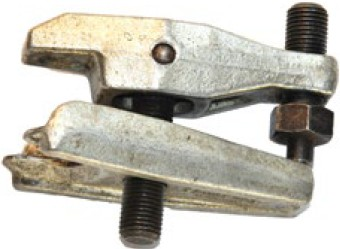
Abb. 31 Ausdrücker für Spurstangen-/Traggelenkköpfe
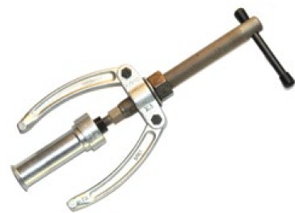
Abb. 32 Universalabzieher für Innenlager
Wie bei allen handwerklichen Arbeiten ist die Arbeitsvorbereitung mit dem Zurechtlegen der erforderlichen und geeigneten Werkzeuge entscheidend für ein gutes Arbeitsergebnis und die sichere Ausführung. Erfahrene Beschäftigte können ihr Wissen vermitteln und auf diese Weise für das sichere Arbeiten einen wichtigen Beitrag leisten.
Beschädigte Schlüssel müssen unverzüglich ersetzt werden. Komplexe Werkzeuge wie Knarren, Drehmomentschlüssel oder Abzieher können nach Herstellerangaben mit den zugelassenen Ersatzteilen instand gesetzt werden. Diese Option muss bei der Herstellfirma erfragt werden. Sie können auch Angebote für eine Kalibrierung von Drehmomentschlüsseln unterbreiten.
Eine Reinigung nach Gebrauch mit folgender trockener Lagerung, zum Beispiel in Werkzeugwagen, sollte zum gewohnten Verfahren gehören. Werden Werkzeuge über längere Zeit nicht genutzt, ist es sinnvoll, die Oberflächen durch säurefreie Öle zu schützen, die mit einem Lappen aufgetragen werden. Handgriffe aus Kunststoff werden nur gereinigt und getrocknet.
Werkzeuge sollen nur mit sauberen und fettfreien Oberflächen eingesetzt werden.
| Infobox |
|
Zangen sind Handwerkzeuge, die unter Nutzung der Hebelwirkung hohe Kräfte zum Schneiden, Greifen oder auch Umformen von Werkstücken wie Draht, Verschraubungen und Aderendhülsen erzeugen können. An der Zange sind zwei Hebel über ein Gelenk miteinander verbunden. Die Länge vom Griff bis zur Mitte des Gelenks (Niet) ist der Kraftarm. Der Kopf der Zange mit den Backen, bis hin zum Zentrum des Gelenks, entspricht dem Lastarm des Hebels. Der gemeinsame Drehpunkt der beiden Hebel ist bei einer Zange der Niet im Gelenk.
Die Begriffe und Bereiche einer Zange sind in der DIN ISO 5742 angeführt. Die drei Hauptteile sind Kopf mit Backen, Gelenk und Griff (Abbildung 33).
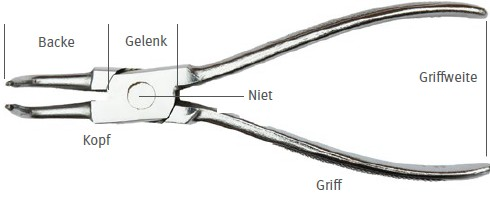
Abb. 33 Bezeichnungen an der Zange
Anforderungen, wie die Härte des Werkstoffs im Bereich der Backen, sind wieder in Normen geregelt. Backen zum Schneiden erfordern eine höhere Härte als Backen zum Greifen. Es gibt Zangen mit und ohne Kunststoffgriffen. Für besondere Anwendungen von Zangen, wie für das Arbeiten unter Spannung, gelten weitere ergänzende Anforderungen aus den Normen.
Zangen werden gefährlich, weil mit ihnen hohe Kräfte erreicht werden können.
Gründe für Verletzungsgefahren:
Zangen gibt es in vielen Bauformen (Abbildung 34), die ihren Verwendungszweck bestimmen. Die Hauptuntergliederung erfolgt in Zangen zum Schneiden, zum Greifen und zum Umformen. Außerdem werden Zangen mit mehreren der drei Hauptanwendungen, als sogenannte Kombinationszangen, angeboten.
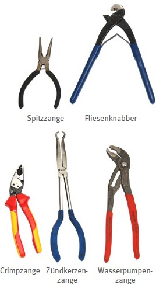
Abb. 34 Zangenarten
Bei der Auswahl einer Zange kann der geplante Einsatzzweck zunächst nach den drei Hauptuntergliederungen festgelegt werden. Dann können die geeigneten Backen über das zu bearbeitende Material und dessen Form bestimmt werden. Das nächste Kriterium sollten die Besonderheiten des Einsatzzwecks sein. Eine mögliche Besonderheit wäre eine für Arbeiten unter Spannung geeignete Ausführung.
Entscheidungsablauf an einem Beispiel:
Einsatzzweck: Ablängen von Kabel, Draht, Adern → Schneiden
Material: Kupfer → Schneidenhärte
Besonderheit: Arbeiten unter Spannung → Seitenschneider mit isolierenden Eigenschaften gemäß Vorgaben aus Norm/VDE
Für viele Zangenarten gibt es Normen, die genutzt werden können, um die richtige Auswahl zu treffen. Oben ist auch zu erkennen, dass für die Auswahl außerdem noch andere Vorgaben aus weiteren Normen beachtet werden müssen. Am Beispiel der Anforderung "Arbeit unter Spannung" muss hinterfragt werden, ob mit dem Werkzeug solche Arbeiten durchgeführt werden dürfen. Ist das der Fall, muss die Eignung und Befähigung der ausführenden Person geprüft werden (siehe auch 3.2 Handwerkzeuge für Arbeiten unter Spannung).
Greifzangen sind nach der Norm DIN ISO 5743 mindestens mit dem Namen oder Zeichen der herstellenden oder der verantwortlichen vertreibenden Firma zu kennzeichnen. Damit Sie sich (arbeits-) sicher für das passende Werkzeug entscheiden können, ist eine Beratung durch den Werkzeug-Fachhandel und die praxiserfahrenen Beschäftigten sinnvoll.
Sieht die Aufgabe sowohl das Schneiden, Greifen und Umformen mit Zangen vor, kann eine Kombinations-Zange die richtige Wahl sein. Es sollte aber immer bedacht werden, dass eine solche Zange nicht den Komfort und auch nicht die optimale Krafterhöhung einer Spezialzange bieten kann.
Einige Zangen haben verstellbare Backen und können, je nach Einstellung, unterschiedlich große Werkstücke greifen. Die Backenweite wird über eine Lageänderung des Gelenks verändert. Eine häufig gebrauchte Variante ist die Wasserpumpenzange. Die Verstellung ist, je nach Herstellfirma und Modell, mehr oder weniger komfortabel und unterscheidet sich auch in der "Beständigkeit" der Einstellung: Es gibt Ausführungen mit einem arretierbaren Gelenk, mit einem Rillengelenk, mit einem aufgelegten oder auch mit einem Gleitgelenk. Beim arretierbaren Gelenk erfolgt die Einstellung, zum Beispiel mit Freigabe über einen federbelasteten Riegel. Nach Verstellung bleibt die eingestellte Backenweite bis zur nächsten Verstellung erhalten. Die anderen aufgeführten Gelenktypen können ebenso sicher über einen Griff eingestellt werden. Bei diesen Typen kann die Einstellung jedoch durch das Schwingen des Griffs "verloren" gehen. Wegen dieser Unterscheidungsmerkmale ist es sinnvoll, dass die Beschäftigten verschiedene Modelle erproben und über deren Auswahl entscheiden.
In manchen Gewerben, wie im Heizungsbau, wird die Wasserpumpenzange gerne als Universalwerkzeug eingesetzt. Verschraubungen an Pumpen, Ventilen, wie auch an Fittings und Überwurfmuttern, weisen immer wieder unterschiedliche Schlüsselweiten auf, Rohre mit unterschiedlichen Durchmessern müssen gehalten oder auch gedreht werden. Da ist die einstellbare Zange schnell bei der Hand. Für den Schutz der Überwurfmuttern sollten Zangenschlüssel (Abbildung 35) mit Parallel-Backen oder Schraubzangen (Abbildung 36) den Wasserpumpenzangen mit der scharfen Zahnung der Backen vorgezogen werden.
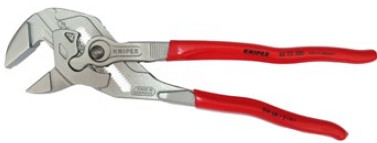
Abb. 35 Zangenschlüssel
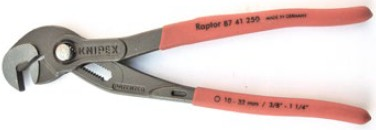
Abb. 36 Schraubzange
Sie sollten immer Modelle auswählen, deren Griffenden nicht zusammenstoßen können. Konstruktiv kann das mit Anschlagnocken (Abbildung 37) an der Zange ausgeschlossen werden.
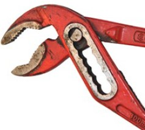
Abb. 37 Anschlagnocken
Für einige Aufgaben, wie Abisolieren oder Fliesenbrechen, ist eine Zange in enger Folge zu öffnen und zu schließen. Die Finger wechseln dann vom Umfassungsgriff in einen Griff, der zwei Finger in die Lage versetzt, einen Schenkel der Zange aufzudrücken. Zangen für diese oder vergleichbare Aufgaben sollten immer mit Federunterstützung beim Öffnen ausgestattet sein. Sind für den Einsatzzweck hohe Handkräfte gefordert, sollten Zangen mit übersetzten Gelenken ausgewählt werden.
Geformte Kunststoffgriffe sind bei kleinen Varianten häufig über die Griff-Schenkel gezogen, während große Zangen meist keine oder nur einfache Beschichtungen aufweisen. Zangen mit ergonomisch geformten Griffen sollten bevorzugt werden.
Werden Zangen nahe der Sehaufgabe, wie bei Arbeiten an Schalttafeln benutzt, können solche mit gekröpften Köpfen die Handgelenksstellung und die Sicht auf die Arbeitsstelle verbessern (Abbildung 38).
Die Auswahl spezieller Zangen sollte in jedem Fall mit den Beschäftigten abgestimmt werden. Sie können die Anforderung – öffnende oder schließende Zange – erläutern und die Dimension für die konkreten Anwendungen genau benennen. Außerdem kennen die Beschäftigten die zu bearbeitenden Werkstoffe, aus denen die erforderliche Härte der Schneiden abgeleitet wird. Für die Schneiden einiger Produkte definieren die Herstellfirmen die Einsatzfähigkeit über die Abstufungen weicher, mittelharter, harter Draht bis hin zu Piano-Draht (Federstahl Abbildung 39).
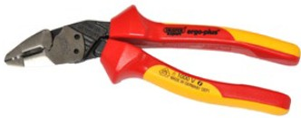
Abb. 38 Zange mit gekröpftem Kopf
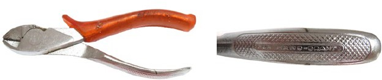
Abb. 39 Seitenschneider einsatzfähig: von weichem Draht bis Federstahl
Da es unter den Zangen vielfältige Bauweisen und Einsatzzwecke gibt, beginnt die ergonomische Bewertung bereits bei der Auswahl einer passenden Zangen-Variante für die entsprechende Aufgabe. Der bestimmungsgemäße Gebrauch der für die Aufgabe optimal geeigneten Zange gewährt eine menschengerechte Belastung von Muskeln, Sehnen und Gelenken. Um das zu erreichen, sollten nur zur Tätigkeit passende Zangensortimente zur Verfügung gestellt werden. Auf Baustellen haben sich Rolltaschen zur Aufbewahrung und für den Transport der Zangen bewährt. In der Werkstatt an der Werkbank erleichtern Zangensortimente an Werkzeugwänden in Greifweite die passende Auswahl. Neben den Zangen sollte für Montagen ebenso ein Satz geeigneter (Maul-) Schlüssel bereitgehalten werden; Sechskantverschraubungen sind mit diesen Werkzeugen sicherer und materialschonender zu bearbeiten.
Große Zangen, wie Rohrzangen, haben meistens Griffe in einer geschwungenen Form, aber ohne geformte Kunststoffelemente. Diese Griffe sind gut mit geeigneten Handschuhen zu fassen.
Kleine Zangen für feine Arbeiten mit ergonomischen Kunststoffgriffen oder beschichteten Griffen sind empfindlicher als große Zangen und sollten gesondert bereitgehalten werden. Auch deshalb, um Verschmutzung zu vermeiden und um die Griffigkeit ohne Handschuhe zu erhalten.
Soweit es möglich ist, sollte der Arbeitsbereich der Montagen freigeräumt und störende Bauteile entfernt werden.
Für Arbeiten mit großen Zangen muss nicht nur der Bereich der Arbeitsaufgabe bedacht werden: Weil für die Arbeit mit Zangen Ganzkörperkräfte eingesetzt werden, ist es wichtig, für den nötigen Raum und somit für einen sicheren Stand zu sorgen.
Kleine Rollwagen, (mobile) Werkbänke mit Haltevorrichtungen wie Schraubstock oder Zwingen ermöglichen Vorarbeiten in günstiger Körperhaltung.
Neben der Ordnung bei Montagearbeiten und auf den Baustellen ist natürlich eine ausreichende Beleuchtung wichtig. Gerade bei Arbeiten im Bestand – beispielweise in Heizungsanlagen – ist die Ausleuchtung mit nur einer Leuchte aufgrund vieler Einbauten oft nicht ausreichend. Deshalb sollten Handlampen – vorzugsweise mit Akku – bereitgehalten werden.
Zunächst ist immer zu beurteilen, ob es für die Aufgabe noch geeignetere Werkzeuge als die Zange gibt. Geeigneter bedeutet in diesem Fall arbeitssicherer und materialschonender. Ist die Zange das geeignete Handwerkzeug zum Greifen oder Halten, ist die Wahl der geeigneten Ausführung nach den zu erwartenden Kräften zu treffen. Die aufzubringende Presskraft darf nur aus der Handkraft erwachsen. Prüfen Sie die Zange vor dem Einsatz:
Griffe können schnell gereinigt werden, während der Verschleiß an Backen oder im Gelenk den weiteren Einsatz der Zange verbietet und die Reparatur oder Aussonderung zur Folge haben muss: Sind die Backen verschlissen, müssen höhere Kräfte aufgebracht werden. Besonders bei großen Zangen steigt dann die Unfallgefahr durch Abrutschen. Hinzu kommt, dass Oberflächen beschädigt werden können.
Sind hohe Kräfte zum Greifen, Halten oder Drehen von Rohren oder zum Lösen verformter oder korrodierter Schraubverbindungen erforderlich, können asymmetrische Greifzangen mit scharfer Zahnung eingesetzt werden. Die Presskraft der Backen ist von Größe und Form der Backen und der Grifflänge abhängig. Die Bauform der Rohrzangen unterstützt bei richtiger Handhabung: Die Presskraft ist dann am höchsten, wenn der Griff der Unterbacke in Drehrichtung hinten liegt (Abbildung 40). Die Handkraft muss lediglich auf den geschwungenen Griff der Unterbacke aufgebracht werden, die Zange zieht sich selbst fest.
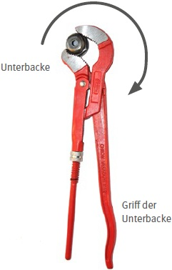
Abb. 40 asymmetrische Zange
Es ist wichtig zu bedenken, dass während dieser kraftvollen Anwendungen das Werkstück die Belastung aushalten muss, ohne dabei unerwünschte oder zweckzerstörende Verformung zu erzeugen. Zum Beispiel kann sich bei Rohren der Querschnitt verformen oder deren empfindliche Oberfläche beschädigt werden. In kritischen Fällen können Schonbacken für die Zange, Vormontagen an einem mit Schonbacken ausgerüsteten Schraubstock oder auch Schlüssel mit Haltebändern aus Leder (Bandschlüssel) die Lösung für die Arbeitsaufgabe bieten. Für dünnwandige Siphonrohre sind Siphonzangen das geeignete Werkzeug.
Bei den Arbeiten mit Greifzangen muss oft ein weiteres Werkzeug eingesetzt werden. Das kann ein Maulschlüssel zum Gegenhalten einer Sechskant-Verschraubung sein oder auch eine weitere (geeignete) Zange bei Rohrverbindungen mit Muffen.
Arbeiten mit Greifzangen sind oft komplexe Aufgaben, die es erfordern, die Zangen richtig einzusetzen und die Widerstandsfähigkeit der zu bearbeitenden Werkstücke genau zu kennen. Deshalb sind praktische Unterweisungen und Übung an Lehrstücken gerade in der Ausbildung wichtig.
Werden Zangen zum Schneiden benutzt, muss darauf geachtet werden, dass die Schneiden auch intakt und scharf sind. Anders als bei Scheren, treffen bei diesen Zangen die Schneiden aufeinander. Das ist nur bei intaktem Gelenk möglich. Beim Schneiden sind oft hohe Handkräfte und ein sicherer Grip erforderlich. Deshalb ist auch bei dieser Bauart von Zangen vor dem Einsatz zu prüfen:
Zum Schneiden von Werkstücken aus harten Legierungen (Draht, Bänder, Bolzen) dürfen nur Zangen mit den dafür geeigneten Schneiden benutzt werden. Ob die Schneiden geeignet sind, wird wesentlich durch ihre Härte bestimmt. Wird eine Zange für weichen Draht zum Schneiden von Draht aus Federstahl (Pianodraht) eingesetzt, muss damit gerechnet werden, dass die Schneiden Schaden nehmen und unbrauchbar werden.
Sind hohe Handkräfte erforderlich, können Zangen mit übersetztem Gelenk den Vorzug bekommen. Auf diese Weise wird die erforderliche Handkraft geringer (Abbildung 41).
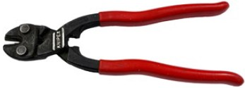
Abb. 41 Drahtschneider mit übersetztem Gelenk
Beim Schneiden von gespannten Drähten ist neben der dafür geeigneten Zange auch an die Verwendung der notwendigen PSA (Schutzbrille und Handschuhe) zu denken. Zum Öffnen von Umreifungsbändern sind Sicherheits-Stahlbandscheren einzusetzen.
Zangen zum Umformen dürfen nur für Werkstoffe/Formstücke und Maße eingesetzt werden, wenn sie die Anforderung des Umformverfahrens erfüllen.
Das gilt besonders für Crimpzangen, bei denen, neben den Eigenschaften der Zange, auch die Vorgaben für die Qualität der Umformung entscheidend sind. Crimpverbindung und deren Herstellung sind zum Beispiel in der DIN EN 60352-2 beschrieben.
Biegezangen für Rohre dürfen ebenfalls nicht ohne Beachtung weiterer Vorgaben angewendet werden. Je nach Werkstoff und Maß der Rohre sind Vorgaben aus weiteren Normen zu berücksichtigen. Oft sind Biegungen nur bei einer vorherigen Wärmebehandlung oder aber nur bei erhitztem Werkstück ausführbar.
Auch bei der Verwendung von umformenden Zangen sind Kenntnisse und Erfahrungen erforderlich, die den Neuen im Beruf durch praktische Übungen und Unterweisungen vermittelt werden müssen.
Die Instandhaltung von Zangen beschränkt sich weitgehend auf die Pflege. Um den Händen einen guten Grip zu bieten, ist die regelmäßige Reinigung der Griffe der erste Schritt in der Pflege. Defekte Kunststoffgriffe können nach den Vorgaben der Herstellfirmen ausgetauscht werden.
Die Gelenke müssen auf Spiel kontrolliert werden. Einige Gelenke bei verstellbaren Zangen können über Schraubverbindungen nachgestellt werden. Außerdem müssen sie gereinigt und geölt oder gefettet werden.
Die Backen sind auf Verschleiß von Zahnung oder Schneiden zu prüfen. Wird Verschleiß festgestellt, kann die Zange nicht selbst repariert werden, da eine mechanische Bearbeitung die Härte nehmen würde. Ob eine Reparatur nach Vorgaben der Herstellfirma möglich und wirtschaftlich ist, kann über den Werkzeug-Fachhandel ermittelt werden.
Die Backen von Greifzangen, besonders von Flach- und Rundzangen, sollen sich in geschlossenem Zustand nur im Bereich der Spitze berühren. Zum Gelenk hin soll ein stetig größer werdender Spalt sichtbar sein. Bei schneidenden Zangen dürfen die Schneiden im geschlossenen Zustand keinen Spalt aufweisen.
| Infobox |
|
Scheren sind Handwerkzeuge, die mit zwei beweglichen Klingen zum Trennen unterschiedlicher Werkstoffe benutzt werden. Ihre Klingen gleiten beim Schneiden aneinander vorbei. Zudem gibt es Scheren mit nur einer beweglichen Klinge. Ein Beispiel dafür ist die Handhebelschere. Eine Ausnahme bildet die Amboss-Schere. Bei dieser trifft eine Klinge auf eine breitere, aber weniger harte Fläche: den Amboss.
Die Hauptteile einer Schere sind die Griffe, das Gelenk und die beiden Schenkel. Bei Modellen für eine Anwendung mit geringem Kraftaufwand sind die Griffe als Öse ausgebildet. Die beiden Schenkel, das Unterteil mit dem Gewinde und das Oberteil mit dem Senkloch, bilden, wie bei Zangen, zwei Hebel. Mit einer Schraube werden die beiden Schenkel im Scherengelenk – auch Gewerbe genannt – zusammengefügt. Es sind auch andere Verbindungen, zum Beispiel mit Nieten, bei Scheren zu finden. Die Schneiden selbst werden als Blatt bezeichnet (Abbildung 42). Je nach Verwendungszweck sind die Spitzen des Blatts spitz oder stumpf ausgeführt.
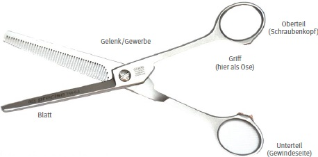
Abb. 42 Bezeichnung an der Schere
Weitere Bezeichnungen sind in der DIN 32613 Scheren; Benennungen aufgeführt.
Das Schneiden erfolgt beim Schließen der Schere gleitend – vom Gelenk aus bis zur Spitze. Dabei wird ein Teil des Materials tatsächlich geschnitten und ein Teil der Materialdicke bricht unter der hohen auf sie einwirkenden Kraft. Deshalb sind Schneidflächen der Werkstücke nie glatt und bedürfen, je nach Anforderung, einer Nachbehandlung.
Scheren werden durch die scharfen Schneiden und Spitzen und durch die hohen Kräfte an den Schneidkanten gefährlich.
Gründe für Verletzungsgefahren:
Scheren gibt es in vielen Bauformen (Abbildung 43). An der Bauform ist der Verwendungszweck erkennbar.
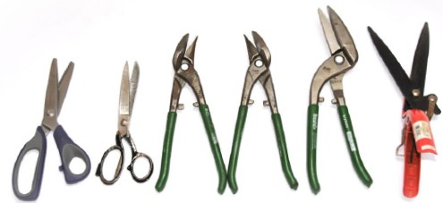
Abb. 43 Scherentypen
Scheren mit wirtschaftlichen Standzeiten sind hochwertige Handwerkzeuge und daher sollte bei der Auswahl die Balance zwischen Anwendung(szeit) und Qualität/Preis mit in den Entscheidungsprozess einfließen.
Sie haben die Möglichkeit, zwischen geschmiedeten und gestanzten Scheren zu wählen. Außerdem sollten Sie berücksichtigen, wie häufig geschnitten wird und welche Handkräfte erforderlich sind. Je höher die Handkraft und je dicker das Schneidgut, desto eher sollte eine geschmiedete Schere in Betracht gezogen werden. Sind häufig Schnitte aus der Hand (z. B Konturenschnitt in Dichtungspapier), also ohne Auflage des Schneidguts oder der Schere auf einer Unterlage, kann die leichtere Bauart einer gestanzten Schere die richtige Wahl sein. Gestanzte Scheren sind meist preiswerter als die geschmiedeten.
Bei den gestanzten Scheren ist besonders auf die Lagerung im Gelenk und die Kunststoffgriffe zu achten. Handscheren, die mit einer Schraube im Gelenk ausgeführt sind, lassen ein Nachstellen zu und sind daher zu bevorzugen.
Das erste wichtige Kriterium, um die Bauform einer Schere auszuwählen, ist, wie bei allen Handwerkzeugen, die Arbeitsaufgabe. Aus der Bezeichnung der Schere – in Bezug auf das Schneidgut – lässt sich oft schon der bestimmungsgemäße Gebrauch ableiten. Bedenken Sie außerdem die zu bearbeitende Materialstärke und die zu erwartenden Handkräfte. Die Form der Schnittlinien – gerade oder gebogene Schnitte – muss als Auswahlkriterium ebenfalls einbezogen werden. Als letztes der Hauptkriterien ist dann noch die Häufigkeit der Schneidaufgaben zu berücksichtigen.
Entscheidungsablauf an einem Beispiel:
| Arbeitsaufgabe: | Zuschnitt für Trennlagen bei der Verpackung, Angaben je Schicht |
| Material: | Papier und Pappe/Karton |
| Materialstärke: | Papier bis 0,2 mm, Kartonage bis 5 mm |
| Schnittlinie: | bis 1 Meter gerade, selten große Bögen nach vorgegebener Linie |
| Häufigkeit: | 100 Bögen Papier, 150 Scheiben Karton |
Wegen der Häufigkeit der geraden Schnitte erscheint der Einsatz einer Handschere in diesem Beispiel lediglich für die Bögenschnitte sinnvoll. Dafür kann eine Kartonschere mit einer Blattlänge von 200 mm in geschmiedeter Ausführung gewählt werden. Die Griffe können als Ösen ausgebildet sein. Die Öse des Unterteils sollte größer gewählt werden, um mit mehr als einem Finger arbeiten zu können. Sind häufig Bögen zu schneiden, sollte eine Akku-Schere eingesetzt werden, um die Hände und Arme vor hohen Belastungen zu bewahren.
Für die geraden Schnitte des Kartons bietet sich der Einsatz einer stationären Hebelschere mit einer Schnittlänge um ca. 110 cm an. Für das Papier kann diese Schere ebenso genutzt werden, wobei mehrere Lagen zugleich geschnitten werden können. Eine Alternative für den Papierschnitt wäre ein Schneidständer mit Schneidrollen für Papier als Rollenware.
Ähnlich kann die Auswahl für Bleche aus Stahl, Kupfer oder auch Zinkblech ablaufen. Die Handscheren wären dann mit Schneiden zu wählen, die für das Schneidgut die nötige Härte und Blattdicke aufweisen. Für gerade Schnitte an schmalen Blechen oder Blechtafeln sind stationäre Handhebelscheren, handbediente Schlagscheren oder Tafelscheren (diese ggf. auch fußbedient) die passenden Werkzeuge.
Kleinere leichte Scheren, zum Beispiel für das Frisierhandwerk, benötigen geringe Handkräfte und sollten daher mit Griffösen für Daumen und Finger gewählt werden. Wichtiges Kriterium für deren Auswahl: Können der Nachschliff und das Richten der Scheren ortsnah ausgeführt werden, um das Werkzeug möglichst lange einsetzen zu können? Schwere Stoff- und Pappscheren werden meistens auf einer festen Unterlage geführt, weshalb auch bei diesen Scheren Griffösen sinnvoll sind.
Bei schweren Handblechscheren werden hingegen Griffformen, wie bei den Zangen, genutzt. Man muss unterscheiden zwischen Scheren für gerade Schnittlinien, links gebogene Schnittlinien oder rechts gebogene Schnittlinien. Diese Scheren müssen mit einem Klemmschutz ausgestattet sein.
Sicherheitsscheren können das Risiko von Stich- und Schnittverletzungen reduzieren.
Anders als bei den Zangen erfordert das Schneiden mit Scheren ein häufiges Öffnen und Schließen in schneller Folge. Bei Einhand-Scheren für den mittleren Kraftaufwand, wie bei denen im Garten- und Landschaftsbau, sollten Scheren mit einer Federunterstützung beim Öffnen gewählt werden.
Gerade für große Scheren gilt, dass sie auch zur Größe der Hand passen müssen. Kleine Hände können Scheren mit langen Griffen nicht ganz umfassen und ein Anschnitt mit der höchsten Kraftwirkung, nahe dem Gelenk, ist kaum möglich.
Die Auswahl kann unterstützt werden durch die Erfahrungen der Beschäftigten und den Rat des Fachhandels.
Bei Scheren mit Ösengriffen, wie den Papierscheren, werden die Schneiden nicht nur über die Vorspannung der Blätter im Schnittbereich zusammengehalten. Die Handhabung definiert sich durch den seitlichen Druck des Daumens auf das Oberteil und der seitlichen Gegenkraft durch den Zug der Fingerkraft auf das Unterteil. Außerdem muss für den Einsatz dieser Scheren die Händigkeit der Beschäftigten berücksichtigt werden: Die Unterstützung in der Handhabung mit der linken Hand erfolgt nur dann, wenn die Schere für Linkshänderinnen und Linkshänder ausgelegt worden ist. Gleiches gilt für Scheren mit kurzen Blättern, wie Telefon- oder Elektrikerscheren, und für leichte Ausführungen von Stoffscheren. Ösen mit Kunststoffbeschichtung oder in die Öse einsatzbare Polster (Abbildung 44) bieten höheren Komfort als der blanke Stahl der Griffe und ermöglicht einen sicheren Griff auch für kleinere Finger.
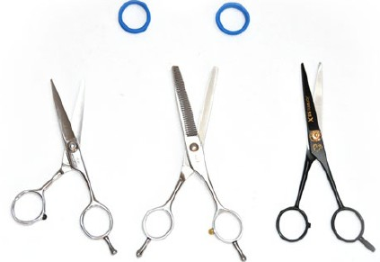
Abb. 44 Scheren mit Ösengriff, Polster für Ösen
Bei schweren Scheren mit Ösen, wie bei gekröpften Stoffscheren, sollte beim Schneiden möglichst eine Auflage für die Schere genutzt werden. Da diese Scheren meistens in Werkstätten benutzt werden, ist der geeignete Schneidtisch idealerweise höhenverstellbar und entsprechend der Sehaufgabe ausgeleuchtet. Bei der Beleuchtung ist darauf zu achten, dass die dort arbeitende Person, um die Schnittlinie gut zu sehen, keinen Schatten wirft. Das Licht sollte daher über mindestens zwei Leuchten aus unterschiedlichen Richtungen bereitgestellt werden.
Achten Sie darauf, dass für alle Schnittlinien (bei einigen Anbietern links: roter Griff, gerade: gelber Griff, rechts: grüner Griff) Handblechscheren bereit liegen und mit ergonomisch geformten Griffen ausgestattet sind. Für den Einsatz an der Werkbank gilt in Bezug auf die Beleuchtung dasselbe wie oben. Beim Schneiden mit dem Werkstück in der Hand kann regelmäßig eine Position eingenommen werden, die gutes Sehen sichert. Weil Bleche und die Abschnitte scharfkantig sein können, sind Schnittschutzhandschuhe zu benutzen, die zur Hand passen und einen sicheren Griff an der Schere nicht behindern.
Zur Ergonomie gehört auch, dass die Beschäftigten die für die Aufgabe geeignetste Schere wählen können. Wenn eine Handhebel-, Schlag- oder Tafelschere das geeignete Werkzeug ist, muss auch damit ergonomisches Arbeiten möglich sein. Blechtafeln müssen dabei aufgelegt werden und der Abschnitt darf nicht unkontrolliert abfallen können. Oft ist an diesen Scheren ein Zusammenarbeiten sinnvoll, das von unerfahrenen Personen unter Anleitung geübt werden muss. Neben einer ausreichenden Beleuchtung ist in diesem Zusammenhang auch auf genügend Platz für die dort Arbeitenden zu achten. Notwendige mobile Auflagen, wie Rollenböcke, sollen griffbereit sein und vor allen Dingen sollten sich Handhebel- und Tafelschere nicht in einem Lärmbereich befinden. Verständigung und Absprache mit der jeweils anderen Person und die freie Sicht im Arbeitsbereich müssen jederzeit möglich sein.
Vor dem Gebrauch der Scheren ist eine Sichtkontrolle erforderlich. Das kann durch einen "Leerschnitt" erfolgen, bei dem der Verlauf der Schneiden gegen das Licht beobachtet wird. Ist die Schere zu leichtgängig oder zu schwer, sollte die Lagerung entsprechend korrigiert werden. Der Rat erfahrener Kolleginnen oder Kollegen kann eingeholt werden und an einem Probestück ein Schnittversuch erfolgen. Auszubildende haben auf diese Weise die Möglichkeit, sich ihre Scherenwahl bestätigen zu lassen und auf Gefahren hingewiesen zu werden.
Bei der Durchführung eines längeren Schnitts mit einer Handschere sollten die Einzelschnitte nicht über das ganze Blatt erfolgen, sondern die Schere muss rechtzeitig nachgeführt werden. Auch für diesen Ablauf gilt: Übung ist für Auszubildende der beste Weg, die richtige Handhabung zu erlernen.
Werden Scheren nicht für die vom Hersteller vorgesehenen Materialien und Materialstärken verwendet, können die Schneiden verklemmen, verschleißen oder beschädigt werden. Wenn das Schneidgut verklemmt ist, kann die Schere oft nur unter hohem Kraftaufwand geöffnet werden. Dabei ergeben sich erhebliche Verletzungsgefahren.
Bei den Blechscheren wird der Abschnitt über die Form der Schneide nach oben "gerollt" und macht auf diese Weise Platz für den nächsten Schnitt. Ist der Abschnitt im Verhältnis zur Blechdicke breit, muss das Blech mit der Hand nach oben gebogen werden. Mit Schnittschutzhandschuhen kann dieser Arbeitsgang (arbeits)sicher ausgeführt werden. Im Anschluss ist dann oft ein Richten des Abschnitts erforderlich. Das Richten ist verbunden mit dem Einsatz anderer Werkzeuge, wie Amboss und Hammer. Diese Aufgabe sollte zu den Übungen für Auszubildende gehören.
Wer Scheren in der Arbeitskleidung transportiert, muss darauf achten, dass die Schere geschlossen und die Spitze geschützt ist.
Wenn sowohl die Handkräfte als auch der Arbeitsumfang zu hoch werden, sollten Sie sich, zur Vermeidung von Überlastungen durch repetitive Bewegungen, für alternative Arbeitsmittel entscheiden, wie elektrische Blechscheren und Elektro-Knabber.
Scheren sollten regelmäßig gereinigt und die Gelenke nach Angaben der Herstellfirma gepflegt werden. Im Anschluss an Arbeiten mit höherer Verschmutzung sollte die Schere sofort gereinigt werden.
Bei schwergängigen Scheren kann der Schmutz durch ein wenig Öl – direkt an das Gelenk gegeben – und durch mehrfaches Öffnen und Schließen gelöst und beseitigt werden. Die Schneiden können mit einer Messingdrahtbürste abgezogen und danach mit einem trockenen Lappen abgewischt werden. Die Reinigung der Griffe mit Wasser oder fettlösender Waschlauge bereitet die Schere gut auf ihren nächsten Einsatz vor. Für die Reinigung der Schneiden leichter Scheren reicht das Wischen mit einem weichen Ledertuch aus.
Ist eine gründlichere Reinigung erforderlich, kann die Schere von erfahrenen Beschäftigten zerlegt werden. Sind Scharten oder stumpfe Schneiden festzustellen, sollte das Blatt nachgeschärft werden. Ist die Schärfung mit einem Schleifstein möglich, können Sie die Reparatur selbst ausführen. Ist jedoch ein Nachschärfen am Schleifbock erforderlich, sollte die Reparatur von einem Fachbetrieb durchgeführt werden: Die beim Nachschliff auftretenden Temperaturen dürfen den Schneiden nicht die Härte nehmen. Frisierscheren werden häufiger einem Fachbetrieb zur Bearbeitung übergeben: Weil die Scheren besonders teuer sind, lohnt sich die Überarbeitung.
Schäden oder Verschleiß im Gelenk können möglicherweise – nach Angaben der Herstellfirma – mit geeigneten Ersatzteilen repariert werden. Die Lieferfirma sollte dazu befragt werden.
| Infobox |
|
Sägen werden zum Trennen von festen Materialien, wie Holz, Kunststoff, Metall, Keramik und Stein, verwendet. Die Hauptbauteile der Sägen sind ein Griff (bei einigen Ausführungen auch zwei Griffe), ein Bügel bei zweiseitig eingespannten Sägeblättern und ein Sägeblatt.
Mit Sägeblättern erfolgt das Trennen in den meisten Fällen mit bestimmten Schneiden. Die Sägeblätter sind dafür mit Zähnen bestückt, die (bestimmte) Geometrien aufweisen. Die Zähne werden über Begriffe, wie Zahnhöhe, Zahnspitze, Zahnrücken, Zahnbrust, Spanraum und Zahnabstand, beschrieben.
Keramische Werkstoffe, Glas oder Steine vergleichbarer Härte aber auch Kunststoffe können nur sehr eingeschränkt durch Sägeblätter mit bestimmten Schneiden getrennt werden. Um diese Werkstoffe zu trennen, werden Sägen mit einem für das Schnittgut geeigneten Sägedraht benutzt. In den Sägedraht sind Körner aus härteren Werkstoffen – unregelmäßig in ihrer Form und Verteilung – in den Draht eingearbeitet. Das Verfahren ist dann ein Trennen mit unbestimmten Schneiden; es entspricht dem Schleifen.
Handsägen können nach den Bauformen, den Anwendungsbereichen und nach der Sägetechnik unterschieden werden. Gängige Bauformen sind Strecksägen und Heftsägen. Bei Strecksägen sind die Sägeblätter in einem Bügel beidseitig eingelegt und werden für die Nutzung gespannt. Bei Heftsägen wird das Sägeblatt einseitig in einem Griff (Heft) befestigt. So werden Bügelsäge, Laubsäge und Gestellsäge den Strecksägen zugeordnet. Feinsägen, Fuchsschwanz, Stichsägen und auch Japansägen gehören zu den Heftsägen.
Je nach Anwendungsfall, wird nach den zu bearbeitenden Werkstoffen unterschieden. Es gibt Sägen mit Blättern für unterschiedliche Werkstoffe, wie für Holzwerkstoffe, Kunststoffe und Metalle. Für weichere Werkstoffe werden Sägeblätter mit einer geringeren Anzahl von Zähnen benötigt als für härtere Werkstoffe. Auch für feine und präzise Schnitte werden Blätter mit hoher Zahnzahl genutzt. Je feiner die Zahnung ausfällt, desto genauer wird der Schnitt. Aber auch: Je feiner die Zahnung ausfällt, desto länger dauert der Schnitt.
Für fast alle Sägeblätter gilt: Die Schnittbreite muss größer als die Blattdicke sein. Damit wird ein Festklemmen des Blatts im Schnitt verhindert. Eine größere Schnittbreite entsteht durch Schränkung der Zähne, also durch eine Biegung der Zähne, im Wechsel von links nach rechts. Bei Sägen für Stahl wird derselbe Effekt durch Wellung des Blatts im Bereich der Zähne erreicht und bei Sägen für zum Beispiel Gasbetonsteine sind die Zähne der Sägeblätter mit breiteren Hartmetallschneiden bestückt.
Dübelsägen weisen keine Schränkung auf, da ihr Blatt auf die Flächen des Werkstücks aufgelegt wird. Blätter mit Schränkung würden die Oberflächen verletzen. Dübelsägen sind deshalb nicht für große Schnitttiefen geeignet.
Die dritte Unterscheidung ist die Richtung des Sägevorgangs. Es wird zwischen Zugsägen und Druck-/Stoßsägen unterschieden. Bei den Zugsägen erfolgt der Spanabtrag während der Bewegung der Säge zum Körper. Japansäge und Laubsäge sind Beispiele für Zugsägen. Bei der Druck-/Stoßsäge erfolgt der Spanabtrag während der Bewegung weg vom Körper. Eisensäge, Stichsäge und Fuchsschwanz sind Beispiele für Druck-/Stoßsägen. Für beide Arten gilt, dass die gegenläufige Bewegung den abgenommenen Span aus dem Schnitt befördert.
Eine Besonderheit sind Sägeblätter für Holzwerkstoffe mit einer Abfolge unterschiedlicher Zahnformen. Diese Zahnung bietet eine hohe Schnittleistung, da beide Bewegungen – also Zug und Druck – einen Spanabtrag zur Folge haben. Die Genauigkeit des Schnitts ist jedoch gemindert.
Wird mit unbestimmten Schneiden des Sägedrahts getrennt, erfolgen der Spanabtrag und der Transport bei der Zug- und der Druckbewegung.
Sägen werden durch ihre scharfen Zähne gefährlich.
Gründe für Verletzungsgefahren:
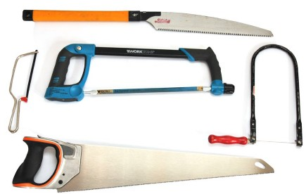
Abb. 45 Typen von Sägen
Am Anfang steht wieder die Arbeitsaufgabe und damit das erste Kriterium für die Auswahl der Säge: Der zu trennende Werkstoff und dessen Härte müssen bekannt sein. Dann sollte die geforderte Qualität des Trennens abgefragt werden. Beachten Sie außerdem – mit Blick auf die Beschäftigten: Wie häufig wird die Säge eingesetzt, welche Belastungen sind zu erwarten – und Aspekte aus der Gefährdungsbeurteilung. Für sehr häufige Vorgänge sollten Handmaschinen bevorzugt werden.
Entscheidungsablauf an einem Beispiel:
| Arbeitsaufgabe: | Genauer Abschnitt von Leisten auf der Baustelle |
| Material: | Hartholz |
| Häufigkeit: | 20 Zuschnitte für Fußleisten |
Wegen der geforderten Genauigkeit ist hier ein Blatt mit kleiner Zahnteilung erforderlich. Infrage kommen daher eine Feinsäge oder eine Japansäge mit entsprechender Zahnung. Um auch Gehrungswinkel genau zu schneiden, kann der Einsatz einer Gehrungssäge mit entsprechendem Blatt sinnvoll sein. Gehrungssägen haben aufgrund ihrer Bauart mit der stabilen Führung in einem Gestell ein hohes Gewicht. Deshalb kann in einem solchen Fall eine leichte Gehrungslade in Verbindung mit einer Feinsäge eine Alternative für die geforderte Häufigkeit sein.
An diesem Beispiel wird deutlich, dass bei der Beschaffung einer Säge auch an weitere Werkzeuge und Sägehilfen gedacht werden sollte. Grundsätzlich sollte eine Bauform gewählt werden, die einen Griff für eine neutrale Handstellung bietet. Wenn Häufigkeit, Kraftaufwand und Dauer besonders hoch eingestuft werden, sollten Sie Griffe mit hohem Griffkomfort wählen. Bei ausgeformten ergonomischen Griffen müssen Sie außerdem die Handdominanz berücksichtigen.
Blätter werden für eine Anwendung – abhängig von der benötigten Genauigkeit – gewählt. Für den Einsatz im Gartenbau oder beim groben Ablängen im Holzbau ist meistens eine schnelle Ausführung bei geringer Genauigkeit gefordert. Deshalb lohnt sich dort der Einsatz von Blättern mit Wechselzahnung. Haben Sie die geeignete Säge und das Sägeblatt bestimmt, sollte auch der passende Blattschutz für die Aufbewahrung und für den Transport zur Ausstattung gehören. Angeboten werden Köcher, Rolltaschen oder auch Universalschutzprofile als Kunststoffabdeckung der Zahnebene.
Griffe von Sägen sollten eine Neutralstellung des Handgelenks ermöglichen. Die Hand ist in der neutralen Haltung weder nach oben oder unten noch zu einer Seite "gekippt". Handgriffe, wie in Abbildung 45 bei der Metallbügelsäge oder dem Fuchsschwanz, ermöglichen eine Neutralstellung beim Sägen. Zusätzlich bieten sie durch die Form des Griffbügels einen Handschutz: Die Hand kann nicht abrutschen und an das scharfe Sägeblatt geraten. Ergonomische Griffbügel schonen die Hand auch, indem sie die für das Sägen aufzubringende (hohe) Kraft günstig auf die Handinnenfläche verteilt (z. B Druckkraft bei Metallbügelsäge und Fuchsschwanz). Bei der Zugbewegung dieser Sägen ist der Kraftaufwand geringer und der Griff unterstützt mit seiner Form dadurch, dass die umschließende Hand bei dieser Art des Zugriffs mühelos hohe Haltekräfte aufbringen kann. In Abbildung 45 ist bei der Metallbügelsäge auch noch ein weiterer Griff am anderen Ende des Bügels zu sehen. Daran kann eine Hand die Führung der Säge während des Schnitts unterstützen. Durch den nach oben weisenden "Nocken" wird für den Daumen der haltenden Hand eine sichere Auflage geboten, die eine Gefahr des Abrutschens mindert.
Griffe bei Metallbügelsägen in Stabform, durchaus in Werkstätten noch zu finden, bieten weder den ergonomischen Komfort noch die Sicherheit gegen Abrutschen bei der Druckbewegung.
Der Markt bietet Sägen mit hochwertigen ergonomisch gestalteten Griffen für unterschiedliche Handgrößen und für die unterschiedliche Handdominanz an. Die Krafteinleitung ist durch die Form der Griffe optimiert. Der höhere Kostenaufwand für solche Griffe kann durch Sägen mit Schnellwechselverschlüssen (auch für unterschiedliche Sägeblätter) kompensiert werden. Die Abbildung 46 zeigt drei Griffbügel aus verschiedenen Perspektiven. Der jeweils mittlere Griff ist ein Universalgriff und unabhängig von der Handdominanz nutzbar. Die jeweils rechts und links dargestellten Griffe haben eine ausgeprägt ergonomische Formung und sind der jeweiligen Handdominanz vorbehalten.
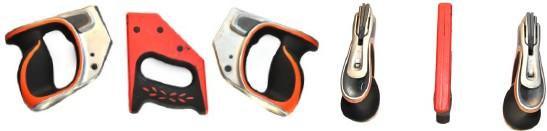
Abb. 46 Ergonomische geformte Griffe für Sägen, aus zwei Perspektiven betrachtet
Japansägen und Laubsägen verfügen über Griffe in Stabform (Abbildung 45). Sie sind in der Bedienung jedoch sicherer als Drucksägen mit Stabgriff, weil die hohe Kraft beim Zug der Säge aufgebracht wird. Wird die Säge im Schnitt zurückgeführt, sind die aufzubringende Kraft und ebenso die Gefahr des Abrutschens geringer. Um diese Sicherheit bei der Bedienung zu erreichen, ist der bestimmungsgemäße Gebrauch, hier der richtige Umgang mit Zugsägen, erforderlich. Auszubildende sollten daher umfassend in dem Umgang mit Zug- und Drucksägen unterwiesen werden. Dazu gehört dann auch das Einspannen der Blätter in die richtige Arbeitsrichtung.
Stabgriffe an Japansägen sind oft lang. Sie können auch mit zwei Händen gefasst werden. Bei dieser Griffart sind die Handgelenke meistens nicht automatisch in einer Neutralstellung. Die Hand am Ende des Griffs neigt zum Kippen nach unten/oben, die dem Sägeblatt nähere Hand hingegen zum seitlichen Kippen im Handgelenk. Gleichzeitig muss der Griff fest umschlossen – also eine Schließkraft der Hand aufgebracht werden, die ein Abrutschen verhindert. Dieser ergonomische Nachteil der Handhaltung gegenüber den Drucksägen mit Griffbügel wird bei Japansägen durch bessere Schnittkontrolle und geringerer Kraft beim Sägen zum Teil kompensiert. Die Zugbewegung sorgt dafür, dass sich das Sägeblatt in der spanbildenden Phase nicht verbiegt oder stecken bleibt. Die Blätter können daher dünner als bei klassischen europäischen Stoßsägen, wie dem Fuchsschwanz, ausgebildet sein.
Günstige Arbeitshöhen können extreme Abweichungen von der neutralen Handstellung während der Arbeiten mit Zugsägen ausgleichen. Günstig sind Arbeitshöhen, bei denen sich die Armbewegung aus einem Schwingen des Oberarms ergibt. Wird eine Japansäge häufig oder länger eingesetzt, sollte ein Modell mit Pistolengriff oder Griffbügel bevorzugt werden.
"Freihandsägen", also das Werkstück für einen schnellen "mal eben" Schnitt mit einer Hand halten und mit der anderen Hand die Säge führen, ist zwar häufig zu sehen, aber sowohl aus Gründen der Arbeitssicherheit und ergonomisch betrachtet nicht sinnvoll und gefährlich. Das Werkstück sollte immer fixiert werden. Was in der Werkstatt einfach möglich ist, funktioniert auch auf Baustellen. An einer mobilen Werkbank und mit Auflagerböcken in angepasster Höhe können Sägearbeiten präzise und in guter Körperhaltung erledigt werden. Der (zeitliche) Aufwand, eine Baustelle entsprechend einzurichten, ist gering und erhöht die Qualität, die Arbeitssicherheit und dient dem Gesundheitsschutz.
An Werkbankplatten, die aus Servicefahrzeugen herausgezogen werden können, ermöglicht ein aufgebauter Schraubstock das Ablängen von Rohren etc. Wie bei allen handwerklichen Arbeiten, ist eine ausreichende Beleuchtung bedeutsam. Gutes Sehen und das Erkennen von Markierungen sind ebenso wichtig, wie die Körperhaltung bei der Ausführung.
Am Anfang steht die Inaugenscheinnahme des Sägeblatts: Dazu gehört die Kontrolle der Zähne, ihrer Schärfe, ihrer Schränkung beziehungsweise Wellung. Achten Sie außerdem darauf, dass besonders Griff und Blatt sauber sind und dass beim Einsatz von Strecksägen die Einspannung auf geraden Verlauf und Spannung geprüft wird. An Gestellsägen kann es sinnvoll sein, das Blatt schräg einzuspannen, um eine bessere Einsicht auf die Schnittlinie zu erhalten.
Die richtige Spannung ist wichtig für einen sicheren, sauberen und einfachen Anschnitt und für einfaches und effizientes Sägen. Für diese anfängliche Beurteilung der Spannung ist Fachkenntnis erforderlich, die Auszubildende über die Theorie und vor allem über praktische Übungen erwerben können.
Je nach Übung und Erfahrung erfolgt der Anschnitt unter Führung des Sägeblatts mit der Außenseite des ersten Daumenglieds oder mit Hilfe des Daumenballens. Beiden Techniken ist gemein, dass die Führung entfernt von der Schneide erfolgt und so Verletzungen vermieden werden. Auf diese Weise kann der Anschnitt mit geringem Kraftaufwand und kurzen Arbeitshüben oder mit gleichmäßigem Zug über die Schnittlinie erfolgen. Es ist das Ziel des Zusammenwirkens von Kraft und Technik, ein Springen des Blatts zu vermeiden. Wenn Drucksägen zum Bearbeiten von Stahl eingesetzt werden, ist es auch möglich, die Technik mit kurzen Druckbewegungen anzuwenden. Sobald der Anschnitt eine ausreichende Führung bietet, kann der Sägevorgang mit langen Hüben, unter Nutzung der gesamten Sägeblattlänge erfolgen.
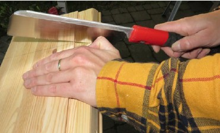
Abb. 47 Führen eines Sägeblatts beim Anschnitt
Unsachgemäße Handhabung oder die Auswahl einer ungeeigneten Säge kann zum Springen oder Abrutschen aus der Schnittfuge und damit zu schweren Verletzungen führen. Deshalb werden für die Neuen im Beruf Übungen mit verschiedenen Sägen an unterschiedlichen Werkstoffen dringend empfohlen. Achtung! Eine falsche Anwendung der sehr scharfen Japansäge kann schnell zu tiefen Schnittverletzungen führen.
Arbeitssichere Schnitte an Holzwerkstoffen – längs oder quer zur Faserrichtung – können, je nach Schnittlinienverlauf, am besten über praktische Erfahrungen, begleitet durch Unterweisungen in die optimale Zahnform und Zahnteilung erlernt werden.
Handsägen für Metall sind in den meisten Fällen Bügelsägen. Das Sägeblatt hat eine sehr enge Zahnteilung. Es sind nur eine geringe Schnittgeschwindigkeit und ein geringer Anpressdruck notwendig. Eine zu große Erwärmung des Sägeblatts könnte sonst zum Klemmen oder sogar zum Brechen des Sägeblatts führen.
Eingespannte Blätter, wie bei Gestell- und Bügelsägen, sollten nach Arbeitsende entspannt werden.
Bei Sägearbeiten spielt Sauberkeit eine große Rolle, weil Stäube die Atemluft verunreinigen können. Späne, die auf Griffen oder Flächen liegen, können über einen Zugriff in die Haut eindringen, was die Benutzung von PSA, wie Schutzbrille, Handschuhe und Atemschutzmaske, nötig macht. Verunreinigungen durch Stäube und Späne verursachen Rutschgefahr auf glatten Böden. Sorgen Sie mit geeigneten Entstaubern oder Staubsaugern für Sauberkeit.
Um Verletzungen vorzubeugen, sind die Sägeblätter nach der Verwendung entweder mit einem Blattschutz zu versehen oder in Rolltaschen aufzubewahren.
Um die Schnittleistung der Handsäge lange zu erhalten, ist eine regelmäßige Pflege der Zähne und des Blatts notwendig. Deshalb sollten sie regelmäßig von Schmutz und Sägespänen befreit werden. Dazu eignet sich zum Beispiel eine grobe Bürste. Harzanhaftungen müssen regelmäßig entfernt werden. Ist die Handsäge längere Zeit nicht in Gebrauch, ist es sinnvoll, sie mit einem öligen Lappen einzureiben und trocken zu lagern, um sie vor Rost zu schützen.
Lösen Sie gespannte Sägeblätter bei Nichtbenutzung, um die Spannkräfte der Säge aufrechtzuerhalten.
Bei Beschädigung der Schränkung besteht die Gefahr, dass der Schnitt verläuft. Das Nachschränken und Schleifen von gebrauchten Sägeblättern darf nur von fachkundigen Personen durchgeführt werden.
In den meisten Fällen können die gebräuchlichen gehärteten Sägeblätter nicht nachgeschärft werden, sodass nur der Tausch gegen ein neues infrage kommt.
| Infobox |
|
Feilen (für harte Werkstoffe wie Stahl, Hartholz) und Raspeln (für weiche Werkstoffe wie Holz, Kunststoff, NE-Metalle) werden den Zerspanungswerkzeugen zugeordnet. Ihre Teile sind Feilenkörper, Angel und Griff. Bei Holzgriffen verhindert ein Ring, die Zwinge, dass der Griff reißt.
Da der Feilenkörper mit der Angel in einem Griff – dem Heft – befestigt wird, ist auch eine Zuordnung zu den eingehefteten Werkzeugen gebräuchlich.
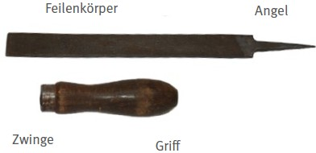
Abb. 48 Bezeichnungen an der Feile
Zunächst können Feilen nach dem Fertigungsverfahren in gehauene oder gefräste Feilen unterschieden werden. Bei den gehauenen Feilen werden die Zähne durch Verformung des Rohlings aus Werkzeugstahl geformt. Bei gefrästen Feilen bilden sich die Zähne durch Abtrag aus dem Rohling.
Je nach Anordnung und Geometrie der Zähne haben Feilen eine schabende Wirkung mit geringem Materialabtrag (meist bei gehauenen Feilen) oder eine schneidende mit höherem Materialabtrag (meist bei gefrästen Feilen).
Eine weitere Unterscheidung ist bei gehauenen Feilen – leicht erkennbar – der Unterschied von Einhieb oder Kreuzhieb. Beim Einhieb liegen alle Zähne in parallelen Linien winklig zur Längsachse des Rohlings. Beim Kreuzhieb wird in gleicher Weise zuerst der sogenannte Unterhieb gehauen. Über diesen wird dann der Oberhieb in entgegengesetztem Winkel geschlagen.
Für die weitere Differenzierung wird die Anzahl der Zahnlinien je Länge (1 cm) – die Hiebzahl – herangezogen werden. Für die Hiebzahl wird beim Kreuzhieb die Anzahl im Oberhieb genommen.
Bei den Raspeln wird die Anzahl der Einzelzähne je 1 cm² aufgeführt.
Das Verhältnis der Feilenlänge und der Hiebzahl wird für die Zuordnung einer Kennzahl, dem Hieb der Feile (oder Raspel) benutzt. Am Beispiel einer Werkstattfeile mit 150 mm Länge und einer Hiebzahl 13 (Anzahl der Zahnlinien je cm) wird die Kennzahl Hieb 1 zugeordnet, sind es 18 Zahnlinien je cm der Hieb 2 und bei 22 Zahnlinie je cm der Hieb 3.
Zwei weitere Unterscheidungsmerkmale sind die Feilenart wie Werkstattfeile oder Schlüsselfeile und die Querschnittsform des Feilenkörpers wie Dreikant, halbrund, rund oder flach.
In der DIN 7284 Technische Lieferbedingungen Feilen und Raspeln ist festgelegt, dass Feilen mit dem Namen des Herstellers dauerhaft zu kennzeichnen sind (auf Feilenkörper oder Griff). Der Hieb muss zumindest auf der kleinsten Verpackungseinheit angegeben werden.
Feilen, bei denen Feilenkörper mit harten Partikeln aus z. B. Diamant belegt sind, haben – ähnlich den bei Sägen beschriebenen Sägedraht – keine geometrisch bestimmten Schneiden. Sie können bei gehärteten Stählen zum Abtragen genutzt werden. Das Verfahren ist Schleifen – und nicht Zerspanen.
Feilen und Raspeln werden durch ihre scharfen Zähne und die spitzen Angeln gefährlich.
Gründe für Verletzungsgefahren:
Die gebräuchlichsten Feilenarten sind:
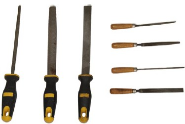
Abb. 49 gebräuchliche Feilen
Für die Auswahl ist die wichtigste Information, welche Werkstoffe bearbeitet werden. Folgend muss geklärt werden, ob eine grobe Bearbeitung mit großem Spanabtrag erforderlich ist. Bei der Bearbeitung von Stahl wäre in diesem Fall eine Werkstattfeile mit Hieb 1 – eine Schruppfeile – die richtige Wahl. Ist eine feine Bearbeitung mit geringem Spanabtrag erforderlich, kann eine Werkstattfeile mit Hieb 3 – eine Schlichtfeile – gewählt werden. Häufig wird mit einer Schruppfeile vorgearbeitet und folgend mit einer Schlichtfeile nachgearbeitet. Für einfache Vorarbeiten kann alternativ eine Werkstattfeile mit Hieb 2 – eine Halbschlichtfeile – als universell einsetzbare Werkstattfeile genutzt werden.
Je feiner die Bearbeitung, desto größer sollte der Hieb gewählt werden.
Oft werden feine Bearbeitungen mit geringem Kraftaufwand und hoher Kontrolle ausgeführt. Feilen werden dann nicht kraftvoll mit der Hand, sondern feinfühlig mit den Fingern gehalten. Dafür werden Schlüsselfeilen benutzt, die deutlich kleinere Feilenkörper und Griffe als Werkstattfeilen haben.
Nach der Klärung hinsichtlich der Anforderung kann die Beschaffung mit Hilfe der Normen konkretisiert werden:
Werkstattfeile DIN 7261 – E 250 – 2
Definiert eine Werkstattfeile halbrund (E) mit einem Feilenkörper der Länge 250 mm und dem Hieb 2 (Hiebzahl 12)
Schärffeile DIN 7262 – E 200 – 2
Definiert eine flache (E) Schärffeile mit einem Feilenkörper der Länge 200 mm und dem Hieb 2 (Hiebzahl 20).
Bei jeder Feile ist es möglich, dass die Arbeitsfläche durch Späne "verschmutzt". Die Arbeitsleistung und Qualität leiden darunter. Deshalb sollte zur Feile immer auch eine Feilenbürste (Abbildung 50) und Schlämmkreide ausgegeben werden.
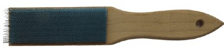
Abb. 50 Feilenbürste
Sind gehärtete Stähle zu bearbeiten, reicht oft auch eine hohe Hiebzahl nicht aus. Die Auswahl muss dann zur Feile mit den unbestimmten Schneiden (Diamantpartikel) führen.
Werden Feilen für Holz oder Kunststoffe benötigt, so ist die Erfahrung der Anwenderinnen und Anwender für die richtige Wahl wichtig. Gehauene oder auch gefräste Feilen mit hoher Hiebzahl lassen eine feine Bearbeitung von Harthölzern zu, sind aber für Weichholz ungeeignet, da sie sich schnell zusetzen. Deshalb wird für die Bearbeitung von Holz und Kunststoff ein Satz verschiedener Feilen zur Auswahl benötigt.
Feilen und Raspeln werden mit Griffen/ Heften aus Holz oder aus Kunststoff angeboten. Beide Werkstoffe sind gut geeignet und die Wahl kann nach den Vorlieben der Beschäftigten getroffen werden. Bei Holzgriffen ist auf der Seite zur Aufnahme der Angel ein Blechring – die Zwinge – aufgebracht: sie verhindert das Reißen des Griffs beim Eintreiben der Angel. Kontaktfeilen haben keine Griffe, sondern einen Bereich des Feilenkörpers, der für die Zufassung mit den Fingern geformt ist.
Die Aufbewahrung kann in der Werkstatt an Werkzeugwänden erfolgen. Für den mobilen Einsatz auf Baustellen sind Rolltaschen sehr gut geeignet. Lose Aufbewahrung in Werkzeugkästen ist wegen der empfindlichen Arbeitsflächen der Feilenkörper ungeeignet.
Die Anforderungen der Ergonomie an das Werkzeug sind lediglich auf den Griff beschränkt. Die Arbeitsweise einer Feile benötigt immer zwei Hände. Während eine Hand die Feile am Griff hält und die Feile in ihrer Achsrichtung schiebt oder zieht, drückt die andere Hand mit den Fingern auf den Feilenkörper. Beide Hände wirken koordiniert zusammen, um die Bewegung des Feilenkörpers parallel zur Bearbeitungsfläche oder auch quer in unterschiedlichen Winkeln zu führen.
Bei dem Griff in Achsrichtung der Feile wechselt die Handgelenkstellung um die Neutralstellung bei leicht gedrehtem Unterarm. Der Kraftaufwand beim Schieben und Ziehen ist jedoch nicht sehr hoch und wird über den dynamischen, gleichförmigen Bewegungsablauf in jedem Anwendungsfall durch die ausführende Person für sie optimiert. Eine andere Griffform wie z. B. ein Pistolengriff ist daher nicht sinnvoll.
Sind häufig spanende Bearbeitungen erforderlich, sollten Handmaschinen zumindest für den groben Abtrag bereitgestellt werden.
Arbeitshöhen, die Bewegungen ohne Anheben der Arme im Schulterbereich ermöglichen, sind günstig. Das fest eingespannte Werkstück im Schraubstock oder in der Vorder- oder Hinterzange der Hobelbank, geben diese Höhen vor. Höhenverstellbare Werk- und Hobelbänke aber auch ein Höhenverstellgerät für den Schraubstock lassen die günstigste Höhe für unterschiedlich große Beschäftigte schnell einstellen.
Um Kosten niedrig zu halten, können Werk- und Hobelbänke auch in verschiedenen Arbeitshöhen, bestimmt nach den Körpermaßen der Beschäftigten, ausgeführt werden.
Höhenverstellgeräte können auch bei Schraubstöcken im Servicefahrzeug genutzt werden.
Für Arbeiten auf Baustellen kann für die mobile Werkbank mit angepassten Unterleghölzern eine günstige Arbeitshöhe erreicht werden. Für die laufenden Kontrolle des Arbeitsergebnisses ist auf ausreichende, blend- und schattenfreie Beleuchtung zu achten.
Feilen und Raspeln werden für grobe Bearbeitung aber auch für feine und präzise Arbeiten benutzt. Während für das Entgraten eher wenig Aufwand betrieben wird, ist er für eine Nacharbeit mit hohen Anforderungen an Maßhaltigkeit und Oberfläche bedeutend größer.
Entsprechend ist die Arbeitsvorbereitung, Auswahl der Feilen und deren Sauberkeit wichtig. Vor Arbeitsbeginn muss die geeignete Feile gewählt, auf festen Sitz des Griffs und auf Sauberkeit geprüft werden. Eine Feilenbürste soll bereitliegen und zum Schutz vor Beschädigung der Oberflächen beim Feilen ebenso die Schlämmkreide.
Für die Kontrolle von Maßhaltigkeit können Stahllineal und Winkel genutzt werden (Lichtspaltkontrolle). Mit Hilfe von Filzstiften (bei Metall) oder Bleistiften (bei Holz) kann die bearbeitete Fläche bestrichen und der folgende Abtrag kontrolliert werden.
An die Ausbildenden sind hohe Anforderungen gestellt: Neben den Grundlagen zum Thema Feilen müssen Ausbildende die richtige Einspannung des Werkstücks und die fachgerechte Handführung der Feile vermitteln.
Die Instandhaltung von Feilen und Raspeln kann sich auf die Sauberkeit beschränken. Verschlissene Arbeitsflächen müssen zur Aussonderung der Werkzeuge führen.
Defekte Griffe müssen vor erneuter Verwendung durch neue ersetzt werden. Die Griffe müssen in der Achse des Feilenkörpers liegen. Sie werden durch Aufschlagen des Griffes auf einer harten Unterlage oder durch Hammerschläge auf den Griff aufgetrieben, dabei ist der Feilenkörper frei in der Hand zu halten.
Holzgriffe sollten zentrisch mit richtig bemessenen Stufenbohrungen versehen sein, um eine ausreichende Anpassung an die Form der Angel zu erzielen. Wichtig ist, dass die Angel tief genug im Griff eingesetzt ist: Zwischen aufgestecktem Griffende und Feilenkörper sollte ein Abstand vorgesehen werden. So ist bei Verschleiß der Aufnahmen ein Nachschlagen möglich. Der Wechsel der Griffe ist eine Aufgabe, die in der Ausbildung geübt werden sollte.
| Infobox |
|
Beitel, auch Stecheisen oder Stemmeisen genannt, gehören, wie die Feilen, zu den zerspanenden eingehefteten Handwerkzeugen, jedoch für Holzwerkstoffe.
In den DIN-Normen wird die Bezeichnung Beitel genutzt. Sie werden in Stechbeitel DIN 5139, Hohlbeitel DIN 5142, Lochbeitel DIN 5143 und Drechslerbeitel DIN 5144 unterschieden. Für die Griffe steht die DIN 5138. Die technischen Lieferbedingungen für die genannten Beitel sind in der DIN 5154 enthalten. Dort werden außerdem der Werkstoff, die geforderte Härte und der Härtebereich aufgeführt. Die dauerhafte Kennzeichnung des Werkzeugs mit der Breite und dem Namen oder Zeichen der Herstellfirma werden außerdem gefordert. Die Holzwerkzeuge Stechbeitel und Hohlbeitel sind auch in der Norm ISO 2729 beschrieben. Diese Norm hat Bedeutung für den internationalen Markt.
Im Vergleich zwischen Feilen und Raspeln fällt besonders auf, dass auch die Beitel mit einer Angel im Griff (Heft) gehalten werden. Anders verhält es sich für die Bezeichnung des Arbeitsteils. In der DIN 5155 Beitel Benennung wird dieser Teil "Blatt" genannt. Das Blatt endet in der Schneide, die als Fase, Facette oder als Wate bezeichnet wird. Während die obere Seite – mit Blick auf die Fase der Schneide – als Rücken bezeichnet wird, lautet die Bezeichnung für die Unterseite "Spanfläche, Spiegelfläche oder Spiegel" (Abbildung 51).
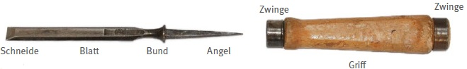
Abb. 51 Bezeichnungen am Beitel
Auffälliger Unterschied zur Feile ist der Bund, der das Eindringen in den Griff verhindert und den Kraftübergang vom Griff auf das Blatt gewährleistet.
Wie auch bei den Feilen befindet sich am Holzgriffende, mit einer Bohrung für die Angel, ein Ring – die Zwinge – die verhindert, dass der Griff beim Eintreiben der Angel reißt. Eine Zwinge sitzt bei den meisten Beiteln auch am anderen Ende. Da Beitel auch mit einem Hammer geschlagen werden, muss die Zwinge verhindern, dass sich der Griff an diesem Ende spleißt. Das Ende des Griffs ragt aus dem Ring hervor und bietet die Kontaktfläche für den Hammer. An Beiteln kleinerer Bauart (Bildhauereisen), die allein durch Handkraft genutzt werden, fehlt die Zwinge am Griffende. Bei Kunststoffgriffen kann auf diese Zwingen verzichtet werden.
Für Beitel gibt es unterschiedliche Blatt-Breiten. Übliche Breiten sind in Tabellen der jeweiligen Norm zu finden. Das oben abgebildete Handwerkzeug hat laut Norm die Bezeichnung:
Stechbeitel B 26 GA DIN 5139
| B: | Form mit abgeschrägten Kanten |
| 26: | Blattbreite |
| GA: | für Griff aus Holz mit Form A |
Da Schlag- oder Stoßspachtel ähnlich aufgebaut sind und ebenso mit einem Hammer geschlagen werden können, wird das Handwerkzeug hier ebenfalls aufgeführt (Abbildung 52). Schlagspachtel kommen hauptsächlich bei Renovierungsarbeiten zum Einsatz, zum Beispiel beim Entfernen von alten Boden- oder Wandbelägen.
Beitel werden wegen ihrer scharfen Schneiden und ihrer spitzen Angeln gefährlich.
Gründe für Verletzungsgefahren:
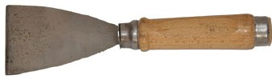
Abb. 52 Schlagspachtel
Mit Beiteln ist, je nach Ausführung, ein präzises aber eben auch ein grobes Zerspanen möglich. Im Schreinerei- und Tischlereihandwerk werden häufig Stechbeitel in Breiten von 12 mm und 24 mm eingesetzt, im Zimmererhandwerk sind es meistens Beitel mit 20 mm und 40 mm Breite. Mit diesen Beiteln lassen sich viele Aufgaben in dem jeweiligen Gewerk – grob oder fein – erledigen.
Je nach Aufgabe können auch andere Bauformen, wie Hohlbeitel, für Reparaturen oder Nacharbeiten benötigt werden. Die Auswahl sollte daher immer in Absprache mit den Beschäftigten erfolgen.
Für das fachgerechte Nachschärfen sind Nass- und Trockenschleifmaschinen oder Abziehsteine unterschiedlicher Körnung erforderlich. Für die Aufbewahrung und die Mitnahme auf Baustellen sind neben Holzkästen auch Rolltaschen geeignet. Die bei neuen Beiteln übliche Kunststoffschutzkappe auf der Schneide wird von vielen Beschäftigten weiter genutzt (Abbildung 53).
Abb. 53 Kunststoffkappe für die Wate
Bei der Neubeschaffung sollte zuvor ermittelt werden, welche Griffarten – Holz oder Kunststoff – die Beschäftigten bevorzugen. Wird der Beitel häufig mit einem Hammer geschlagen, ist es auch wichtig zu klären, ob Bedarf an einem Holzhammer (Klüpfel, Klopfholz, Bronzeklüpfel) besteht.
Da Werkstücke für die Bearbeitung mit Beitel zu fixieren sind, ist ebenfalls zu prüfen, ob Klemmzwingen beschafft werden sollten.
Die ergonomischen Anforderungen an Beitel sind, wie bei den Feilen, auf den Griff beschränkt. Die Arbeitsweise mit diesem Handwerkzeug erfolgt entweder über reine Kraftaufwendung der führenden Hand oder mit der Unterstützung eines Hammers.
Wird nur der Beitel genutzt, fasst die Hand den Griff an, sodass der Daumen zum Blatt gerichtet ist und der Beitel wird geschoben. Für die sichere und kontrollierte Führung drückt die andere Hand von oben auf das Blatt des Beitels. Ein ergonomisch günstiger Ablauf ist immer dann möglich, wenn das Werkstück gut zugänglich ist und eine annähernd aufrechte Oberkörperhaltung eingenommen werden kann.
Erfordert die Bearbeitung des Werkstücks einen höheren Kraftaufwand, wird ein Hammer zu Hilfe genommen. Der Hammer wird häufig mit der dominanten Hand geführt und der Beitel wechselt dabei in die andere Hand. Der Beitel wird dabei mit dem Daumen in Richtung des Schlagendes gehalten. Die Führung erfolgt meistens mit der Hand in der Achslinie des Unterarms. Während des – durch den Hammerschlag ausgelösten – Spanabtrags ist eine Korrektur nicht möglich – im Gegensatz zur Arbeit ohne Hammer. Auch bei dieser Arbeitsweise ist der Bewegungsablauf immer dann ergonomisch günstig, wenn der Oberkörper annähernd aufrecht und das Werkzeug gut zugänglich ist.
Bei der Arbeit an einer Hobelbank – mit dem fest in die Vorder- oder Hinterzange eingespannten Werkstück – sind ergonomische Bedingungen für beide Arbeitsweisen regelmäßig gegeben.
Höhenverstellbare Hobelbänke lassen sich schnell auf die günstigste Arbeitshöhe einstellen. Sind Hobelbänke im Bankraum nicht höhenverstellbar, können sie in unterschiedlichen Höhen ausgeführt werden. Achten Sie auch auf Baustellen darauf, die Arbeiten in günstiger Höhe auszuführen, während das Werkstück mit Schraub- bzw. Holzzwingen fixiert worden ist. Für mobile Werkbänke können mit angepassten Unterleghölzern günstige Bedingungen durch eine bessere Arbeitshöhe erzielt werden.
Um das Arbeitsergebnis jederzeit kontrollieren zu können, muss auf ausreichende Beleuchtung geachtet werden.
Beitel werden für eine grobe Bearbeitung, auch für feine und präzise Holzarbeiten, genutzt. In beiden Fällen sind eine scharfe Schneide und ein intakter Griff Voraussetzung. Während der Inaugenscheinnahme vor der Verwendung kommt es darauf an, zu erkennen, dass der Griff festsitzt, die Schneide scharf und die zu bearbeitenden Flächen frei sind, zum Beispiel von Nägeln, und dass sie sauber sind. Bei stumpfer Schneide oder beschädigtem Griff besteht erhöhte Verletzungsgefahr durch Abrutschen. Solche Werkzeuge müssen vor weiterer Benutzung instandgesetzt werden.
Während der Arbeit mit einem Beitel sollte darauf geachtet werden, dass beide Hände immer hinter der Schneide gehalten werden und sich keine anderen Personen im Wirkungsbereich aufhalten. Nach dem Einsatz muss das Werkzeug sicher abgelegt werden, sodass sich Personen nicht daran verletzen können.
Die Arbeit mit dem Beitel unter günstigen Bedingungen ist bereits unter "Ergonomie bei Arbeiten mit Beiteln" beschrieben worden. Die Bedingungen, wie gute Körperhaltung und gute Beleuchtung, sollten auch für die Arbeiten auf Baustellen an schon fest verbauten Bauteilen durch angemessene Arbeitsvorbereitungen geschaffen werden. Arbeit auf Plattformen oder Gerüsten bieten diese Möglichkeit. Der Einsatz eines Beitels von einer Leiter aus muss auch bei niedrigem Kraftaufwand und sehr kurzem Einsatz während einer Nacharbeit kritisch betrachtet werden.
Gerade die Arbeit an fest verbauten Bauteilen setzt Kenntnisse im Umgang mit dem Werkzeug und den unterschiedlichen Eigenschaften von Holzarten, im Zusammenhang mit der Faserrichtung, voraus. Die Vermittlung dieser Aspekte gehört daher in die Ausbildung. Übungen für die fachgerechte Führung der Beitel an verschiedenen Hölzern und den entsprechenden Faserrichtungen können dieses Wissen festigen.
Werden Beitel mit Hämmern geschlagen, muss bedacht werden, dass Stahlhämmer wegen der höheren Masse und Härte den Verschleiß des Schlagendes am Beitel erhöhen. Es wird deshalb empfohlen, Klüpfel oder Klopfholz zu bevorzugen. Sie schützen das Werkzeug und die Gelenke der Ausführenden.
Schlagen mit der Hand(innenfläche) ist mit hohen Gesundheitsrisiken für die Blutgefäße in den Händen verbunden. Ein immer bereit liegender Holzhammer kann daran erinnern und zur fachgerechten Benutzung "mahnen".
Die Instandhaltung beginnt mit der Pflege der Beitel. Zum Arbeitsende kann der Beitel mit einem weichen Tuch abgerieben und die Schneide wieder mit der Kunststoffkappe geschützt werden.
Ist die Schneide stumpf, kann sie an einem Abziehstein geschärft werden. Ist die Schneide stark beschädigt, kann sie mit einer Schleifmaschine nachgebildet, geschliffen und am Ende mit einem Abziehstein gebrauchsfertig geschärft werden. Beim Schleifen darf das gehärtete Blatt nicht zu heiß werden, da es seine Festigkeit sonst verliert (ausglüht).
Beschädigte Griffe müssen unverzüglich erneuert werden. Neue Holzgriffe müssen mit richtig bemessener zentrischer Stufenbohrung präpariert werden, damit die Angel einen festen Halt bekommt und der Bund formschlüssig auf dem Griff liegt. Griffe aus Holz oder Kunststoff können auch fertig für das Auftreiben gekauft werden. Die Griffe werden durch Aufschlagen des Schlagendes auf einer harten Unterlage oder durch Hammerschläge aufgetrieben. Bei dem Verfahren mit dem Hammer wird das Blatt frei in der Hand gehalten. Auch dieser Vorgang bedarf der Übung und Erfahrung.
| Infobox |
|
Der Handhobel ist ein spanabhebendes Werkzeug zur Oberflächenbearbeitung von Holz.
Die Hauptbauteile des Handhobels aus Holz sind der Hobelkasten, das Hobeleisen, der Ballen zum Drücken und der Griff (Horn) zum Führen des Hobels. Der Grundkörper des Hobelkastens trägt ein aufgeleimtes Holz, die Sohle. Sie ist, wegen der höheren Beanspruchung, aus einer härteren Holzart gefertigt worden als der Kasten.
In der Sohle bietet das Maul die Öffnung für die Schneide des Hobeleisens und für den Spandurchgang. Das Hobeleisen ragt nach oben aus dem Spanloch heraus und ist mit dem Keil festgesetzt. Am hinteren Ende des Hobelkastens ist ein Schlagknopf aus Stahl eingelassen. Durch Schlagen mit einem Hammer auf diesen Knopf lassen sich Keil und Hobeleisen lösen (Abbildung 54).
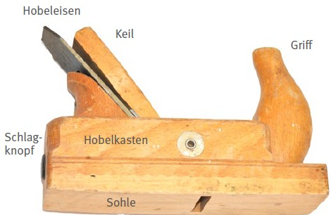
Abb. 54 Aufbau eines Handhobels
Handhobel gehören mit zu den ältesten komplexen Handwerkzeugen. Tischler und Zimmerleute nutzten das Werkzeug im Möbel- und Hausbau. Besondere Bauformen finden noch immer Anwendung, zum Beispiel im Holz-Schiffbau. In Abbildung 55 sind verschiedene Hobelbauarten zusammengestellt:
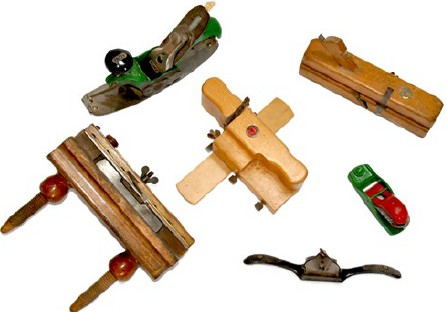
Abb. 55 Verschiedene Hobelbauarten
Einige Bauarten der Handhobel aus Holz sind in vielen Schreinereien, Tischlereien und Zimmereien weiterhin in regelmäßigem Einsatz. Dazu gehören zum Beispiel Schrupphobel, Schlichthobel, Doppelhobel, Putzhobel und Raubank.
Bei einer Raubank (Abbildung 56) sitzt der Griff zum Drücken hinten auf dem Hobelkasten. Er ähnelt dem Griff einer Fuchsschwanzsäge. Die anderen Hobel haben zur Führung vorn einen Griff in Form eines Horns. Der Druck erfolgt über den Muskel zwischen Daumen und Zeigefinger am Handschoner oder Ballen über dem Hobelkasten.
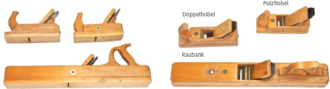
Abb. 56 Doppelhobel, Putzhobel und Raubank
Tabelle 1 Einsatzzwecke für Handhobel
| Bauform | Einsatzzweck | Merkmale |
| Schrupphobel | rohe Flächen einebnen | abgerundete Schneide, 24 cm Kastenlänge, 45° |
| Schlichthobel | wellige Schnitte nach dem Schruppen schlichten und glätten | 24 cm Kastenlänge, 45° |
| Doppelhobel | Einrisse nach dem Schlichten, entfernen und versäubern | spanbrechende Klappe, 22 cm Kastenlänge, 45° |
| Putzhobel | für feine Nacharbeiten | spanbrechende Klappe, 22 cm Kastenlänge, 49° |
| Raubank | schlichten und planen langer Flächen | lange Sohle, 60 cm Kastenlänge, 45° |
Je nach Ausführung unterscheiden sich die eingesetzten Hobeleisen in den geometrischen Abmessungen und in ihrer Klingenform. Bei Doppelhobel und Putzhobel gibt es ein zusätzliches Eisen zum Spanbrechen, die Klappe.
Auf Baustellen sind überwiegend Hobel aus Metall oder Metall und Kunststoff gebräuchlich (Abbildung 57). Es gibt sie ebenso in unterschiedlichen Größen und auch in besonders kleiner Baugröße. Die Bezeichnungen und Verwendungszwecke sind, je nach Ausführung, vergleichbar mit denen der Handhobel aus Holz. Die Einstellungen der Hobeleisen erfolgen über unterschiedliche Stellmuttern und Hebel.
Abb. 57 Handhobel aus Metall und Kunststoff
Handhobel werden wegen ihrer scharfen Schneide am Hobeleisen und an der Klappe gefährlich.
Gründe für Verletzungsgefahren:
Für die Auswahl von Handhobeln gilt der Einsatzzweck als bedeutendstes Kriterium. Da viele Arbeiten mit Maschinen effektiver erledigt werden können als mit einem Hobel, ist der Handhobel aktuell eher für feine Nacharbeit gebräuchlich. Bei Anforderungen, die mit einem Handhobel in kurzer Zeit erledigt werden können, ist er jedoch oft effektiver als eine Maschine. Deshalb gehören Handhobel noch immer zu den Grundausstattungen im Tischlerei- und Schreinereihandwerk und für Zimmerleute.
Die meisten Arbeiten, die mit dem Handhobel gut und effektiv auszuführen sind, können als grob bis mittelfein eingestuft werden. Deshalb sollte die Grundausstattung aus einem Doppel- und einem Putzhobel bestehen. Für die Zimmerleute könnte auch, wegen der häufigen Reparaturarbeiten, ein Schrupphobel dazugehören. Für die Herstellung von Fasen ist ein kleiner Metallhobel schnell zur Hand und kann daher auch zur Grundausstattung gezählt werden.
Für die Bestellung eines Putzhobels mit 48 mm breitem Hobeleisen kann die Bezeichnung laut Norm genutzt werden:
Hobel 48 DIN 7220
Handhobel mit Wechselklingen haben sich in der Praxis und besonders auf Baustellen bewährt, da jederzeit, ohne aufwändiges Nachschärfen der Hobeleisen, ein scharfes Werkzeug über die Ersatzklingen zur Verfügung steht (Abbildung 58). Je nach Anwendungsfall können, statt Klingen aus Chromstahl, auch Klingen aus Hartmetall zum Einsatz kommen, die dann durch einfache Hebelbedienung in den Hobelkasten gezogen werden können.
Abb. 58 Handhobel mit Wechselklinge
Einige Arbeiten erfordern Hobel in einer bestimmten Bauweise (z. B. Simshobel). In solchen Fällen ist die Anfrage an die Anwendenden obligatorisch.
Da der Einsatz von Handhobeln eine ergonomische Körperhaltung und ein fixiertes Werkstück erfordert, müssen im Auswahlverfahren auch die nötigen Arbeitshilfen, wie Zwingen und mobile Werkbank, berücksichtigt werden.
Die Arbeiten mit einem Handhobel sind mit hohem Kraftaufwand, guter Kontrolle und mit Platzbedarf verbunden.
Mit den geformten Griffen verfügt das Handwerkzeug über ergonomische Eigenschaften.
Der ergonomische Einsatz ist jedoch nur möglich, wenn der Bewegungsraum groß genug und eine günstige Körperhaltung während des Arbeitsablaufs möglich ist. Dafür sollte die zu bearbeitende Fläche eine Höhe aufweisen, in der der Handhobel ohne Heben der Oberarme geführt werden kann. Je weiter die Arme ausgestreckt werden, desto geringer ist die Kontrolle über den Handhobel. Daher ist der Bewegungsraum so zu gestalten, dass während der Bearbeitung längerer Werkstücke auch Schritte in die Bearbeitungsrichtung möglich sind. Die ausführende Person sollte eine Schrittstellung einnehmen können. So kann eine Verdrehung des Rumpfs minimiert werden und der Oberkörper kann sich der Dynamik der Arme anpassen und "mitschwingen".
In der Werkstatt können diese Voraussetzungen an der Hobelbank mit der Vorder- oder Hinterzange leicht geschaffen werden. Flexible Bearbeitungshöhen an den Hobelbänken, beziehungsweise an den höhenverstellbaren Bänken, sind für eine ergonomische Arbeitsweise der unterschiedlich großen Beschäftigten eine wichtige Voraussetzung.
Auf Baustellen kann diese Variabilität der Arbeitshöhe nur beschränkt eingerichtet werden. Unter Zuhilfenahme von Böcken, einer mobilen Werkbank und Zwingen sind jedoch deutliche Verbesserungen möglich. Ausreichender Bewegungsraum muss immer angestrebt werden.
Hohe Genauigkeiten erfordern im Ablauf häufige Kontrollen. In diesen Fällen sollte die Beleuchtung für die Sehaufgabe "Kontrolle" ausgelegt werden.
Neben der Wahl des für die Aufgabe geeigneten Hobels ist dessen Einstellung, also die Stellung des Hobeleisens, wichtig. Aus diesem Grund ist die Sichtkontrolle erforderlich. Hobeleisen mit stumpfer oder beschädigter Schneide dürfen nicht zum Einsatz kommen, ebenso wie Handhobel, an denen sich die Griffe lösen oder die Ausbrüche aufweisen.
Die Holzart und die Faserrichtung bestimmen die Bearbeitungsrichtung und die Einstellung des Hobeleisens. Neben der Fachkunde über die unterschiedlichen Holzarten ist es auch wichtig, die richtigen Zustellhöhen der Schneide zu kennen. Die handwerkgerechte Handhabung der Hobel ist deshalb mit Ausbildung, Erfahrung und Übung verbunden. Außerdem werden Kenntnisse in Bezug auf die Eigenschaften des zu bearbeitenden Holzwerkstoffs benötigt.
Voraussetzungen für sicheres Arbeiten:
Sicheres Arbeiten mit Handhobeln erfordert eine Ausbildung mit Übungen für die Einstellung des Werkzeugs und für die Bearbeitung an unterschiedlichen Holzarten.
Der Hobelkasten muss regelmäßig von Staub, Holzspänen und Schmutz mit einem weichen Lappen oder Bürste befreit werden. In diesen Fällen sollte das Hobeleisen zuvor herausgenommen werden.
Metallhobel, Hobeleisen und auch Klappe sind regelmäßig auf Rostbildung zu untersuchen und entsprechend zu reinigen. Außerdem müssen die beweglichen Teile, wie Stellmuttern und die Gewinde, gereinigt werden. Bei längerem Nichtgebrauch sollte das Hobeleisen mit einem Lappen gereinigt, eingeölt und, in einen Lappen gewickelt, aufbewahrt werden.
Die Schneiden der Hobeleisen können nachgeschliffen werden. Das Schleifen sollte im Rahmen der Ausbildung erlernt werden.
Die Ebenheit der Sohle muss regelmäßig geprüft und, bei Bedarf, zum Schutz vor Feuchtigkeit gewachst und danach poliert werden. Ist die Hobelsohle uneben, kann sie nachgeschliffen werden. Sie muss mit dem eingespannten und zurückgenommenen Hobeleisen nachgeschliffen werden, um die durch das verkeilte Hobeleisen auftretenden Spannungen im Hobelkasten beim Schleifvorgang zu berücksichtigen.
| Infobox |
|
Um Werkstücke mit Handwerkzeugen zu bearbeiten, können sie mit Klemmwerkzeugen, wie Handklemmen, Gripzangen und Schraubzwingen, fixiert werden (Abbildung 59). Das jeweils geeignete Klemmwerkzeug wird nach der erforderlichen Haltekraft ausgewählt. Sind geringe Haltekräfte für den Zusammenbau von Bauteilen erforderlich, genügt oft eine Handklemme. Für kraftbetonte Aufgaben am Werkstück können hohe Haltekräfte mit Gripzangen oder Schraubzwingen aufgebracht werden.
Abb. 59 links Handklemme, Mitte Gripzange, rechts Schraubzwinge
Bei den Schraubzwingen werden Werkstücke zwischen einem festen und einem beweglichen Spannarm eingespannt. Die Spannkraft wird am beweglichen Arm, zum Beispiel über eine Gewindespindel, aufgebracht. Durch die Spannkraft verklemmt sich der bewegliche Arm auf der Führungsschiene: Der Spannarm sitzt fest und das Werkstück ist über die Druckkraft der Spindel fixiert.
Es gibt Ausführungen, bei denen die Spindel mit einem Knebelgriff angezogen werden kann (Abbildung 60 links). Der Knebel lässt höhere Spannkräfte einleiten. Für einen schnellen Einsatz gibt es Schraubzwingen mit Schnellverstellung (Einhandzwinge). Einhandzwingen mit Schnellverstellung und einer zusätzlichen Feststellspindel (Abbildung 60 rechts) lassen höhere Spannkräfte aufbringen als Einhandzwingen ohne Spindel (Abbildung 60 Mitte).
Abb. 60 links Schraubzwinge mit Knebel, Mitte Einhandzwinge, rechts Einhandzwinge mit Spindel
Für die Klemmbacken der Zwingen werden zum Schutz der Werkstückoberflächen Schonpads benötigt, die häufig als Zubehör angeboten werden. In der Holzbearbeitung werden auch Klemmzwingen mit Spannarmen aus Holz genutzt. Bei diesen wird das Werkstück mit einer Zunge des beweglichen Spannarms über einen Excenterhebel fixiert (Abbildung 61).
Abb. 61 Holzzwinge, rechts Zunge mit Excenterhebel
Schraubzwingen mit sehr großen Spannmaßen – auch über 2 Meter und mit unterschiedlicher Ausladung (Länge der Spannarme) – ermöglichen das Fixieren großer Bauteile.
Es gibt Schraubzwingen, die komplett aus Metall gefertigt sind und daher auch für Aufgaben unter Einwirkung von Hitze (Schweißen, Löten), also in der Metallbranche, gut geeignet sind.
Auch Gripzangen werden in unterschiedlichen Bauformen angeboten. Den Unterschied machen zum Beispiel die Backenform und die Spannweite aus. Der ergonomische Vorteil der Gripzangen mit geformten Griffen aus Kunststoff kann überall dort genutzt werden, wo Hitze keine Rolle spielt.
Handklemmen werden ebenso in unterschiedlichen Größen und mit unterschiedlicher Spannkraft angeboten. Sie sind schnell einsetzbar und können trotz ihrer geringen Haltekräfte für geringe Anforderungen an die Spannkraft und zur Vorbereitung für das Fixieren mit anderen Klemmwerkzeugen genutzt werden.
Eine ergonomische Körperhaltung ist während der Arbeiten im Stehen an einem aufgerichteten Rücken erkennbar. Aus dieser Position heraus können Aufgaben mit hohem Kraftaufwand, aber geringem Sehaufwand, zum Beispiel grobe Montagen bis hin zu Sehaufgaben mit geringem Kraftaufwand, wie bei einer Qualitätskontrolle üblich, menschengerecht, effektiv und von hoher Arbeitsgüte bewältigt werden. Weil die Menschen unterschiedliche Arbeitsbedingungen benötigen, gibt es nicht nur eine richtige Arbeitshöhe:
In der Werkstatt werden an Werk- oder Hobelbänken überwiegend Bearbeitungen oder Montagen mit eher höherem Kraftaufwand durchgeführt. Werkstücke können dort in einem Schraubstock, mit Vorder- oder Hinterzange, mit Schraubzwingen oder auch mit Maschinentischspannern fixiert werden. Eine Verstellbarkeit der Arbeitshöhe von 80 cm – 110 cm wäre für eine große Gruppe von Beschäftigten für Aufgaben mit hohem Kraftaufwand ergonomisch günstig. Sind dort auch Aufgaben mit hohem Sehaufwand (über längere Zeit) zu verrichten, wäre ein Verstellbereich von 80 cm – 140 cm geeignet.
Müssen Hobelbänke oder Werkbänke neu angeschafft werden, lohnt es sich – auch mit Blick auf eine alternsgerechte Gestaltung – in eine höhenverstellbare Ausstattung zu investieren. Für eine Verbesserung im Bestand kann die Belegschaft "vermessen" werden. Die Grafik (Abbildung 62) kann als Vorlage für die Körperhaltung dienen: Das Maß vom Boden bis zur Mitte der Hand am Werkstück (Wirkstelle) liefert die individuelle ergonomische Höhe. Oft gibt es Beschäftigte, deren individuelle Höhenmaße, mit zum Beispiel +/- 4 cm, sehr nah beieinander liegen. In diesen Fällen könnten vorhandene Bänke durch Unterlagen in unterschiedlichen Höhen für die jeweilige "Größengruppe" eingerichtet werden.
Abb. 62 Arbeitshöhen in Bezug zur Arbeitsaufgabe (Körpermaße nach DIN 33402-2, Abzüge und Zuschläge ca. 10 %, u.a. Zuschlag 30 mm für Arbeitsschuhe, abgeleitet aus DIN EN ISO 14738)
Werden an den so angepassten Werk- und Hobelbänken Aufgaben mit mittlerem Kraftaufwand erledigt, können Schraubstöcke mit Höhenverstellgerät Werkstücke in ergonomischer Höhe fixieren lassen. Spezielle Vorrichtungen oder Zulageplatten auf der Arbeitsfläche der Werk- und Hobelbank ermöglichen eine Erhöhung der Wirkstelle. Aufgaben mit hohem Sehaufwand sind meistens mit sehr geringem Kraftaufwand zu erfüllen. In diesen Fällen kann ein Aufsatzpult auf den Bänken genutzt werden.
Die Beleuchtung ist für die Höhe der Wirkstelle und damit der Sehaufgabe auszulegen. Ist die Beleuchtung für Tätigkeiten mit hohem Sehaufwand ausgelegt, genügt sie meist auch für Arbeiten mit mittlerem und hohem Kraftaufwand in den geringeren Arbeitshöhen. Für die Auslegung der Beleuchtung sind Kenngrößen wie die Mindestwerte der Beleuchtungsstärke (E) und des Farbwiedergabeindex (Ra) in der Anlage 3 der Arbeitsstättenregel ASR A3.4 "Beleuchtung und Sichtverbindung" für verschiedene Sehaufgaben aufgeführt.
Auf Baustellen kann das "richtige" Höhenmaß oft nur annähernd realisiert werden. Mobile Werkbänke bieten trotzdem bessere Arbeitsbedingungen als der Boden oder ein Materialstapel. Anpassungen mit Unterleghölzern sind dort ebenfalls möglich. Auch wenn auf Baustellen keine optimalen Höhenmaße erreicht werden können: die Vielfalt der Tätigkeiten begünstigt ergonomisch vorteilhafte Wechsel der Körperhaltung.
Alternativ zu mobilen Werkbänken können auch Arbeitsplatten auf (höheneinstellbaren) Böcken befestigt werden. Die Platten können so groß sein, dass auch die Bearbeitung großer Werkstücke daran erfolgen kann.
Die Beleuchtung sollte auch auf Baustellen optimal gestaltet werden. Wenn dort Tätigkeiten, wie in der Werkstatt, verrichtet werden, können die im Anhang 3 der ASR A3.4 aufgeführten Mindestwerte ebenso für eine gute und gesundheitsgerechte Beleuchtung sorgen. Bei der Nutzung von Handleuchten und Baustellenstrahlern ist dann auf möglichst schattenfreie Ausleuchtung und Blendfreiheit zu achten.
Neben Werkzeugtaschen, Werkzeugboxen oder Karren für den Handtransport sind auch Tragegriffe für Werkstücke mit Formschluss (Haken) oder Kraftschluss (Klemmen, Sauggriffe, Magnetgriffe, Abbildung 63) wichtige Arbeitsmittel zur Verbesserung von Arbeitssicherheit und Ergonomie.
Abb. 63 Tragegriffe
Ob in der Werkstatt oder auf der Baustelle: Ordnung und Sauberkeit erhöhen die Arbeitssicherheit, die Arbeitsleistung und den Gesundheitsschutz. Sie sollten als Teil der Arbeitsvorbereitung verstanden werden.
Werkzeuge, übersichtlich in Werkstattwagen, Schränken, an Werkzeugwänden, in selbst gefertigten Kästen, Werkzeugboxen, oder Taschen aufbewahrt, schützen die Werkzeuge und bieten schnellen und sicheren Zugriff (ohne Suche). Die Ordnung und die Art der Aufbewahrung kann sich nach den Einsatzorten und den dort anstehenden Aufgaben richten. Eine Montagetasche kann, zum Beispiel für Werkzeuge, die bei Heizkörpermontagen benötigt werden, gepackt sein. Eine andere Tasche ist wiederum gepackt für die Messaufgaben an Brennern und Thermen. Stapelbare Werkzeugboxen (System-Werkzeugkoffer) können in der Werkstatt für die anstehende Fahrt zur Baustelle oder zur Kundschaft schnell themenbezogen zusammengestellt und auch mit Hilfe einer Sackkarre transportiert werden.
Ob in der Werkstatt oder auf Baustellen, der Montageort sollte immer sauber und staubfrei gehalten werden. Sind Stäube zu beseitigen, sollten dafür geeignete Sauger oder Entstauber benutzt werden.
Beim Einsatz von Handmaschinen wie auch von Handschleifklötzen können Stäube schon am Entstehungsort (arbeits)sicher mit einem Entstauber aufgenommen werden (Abbildung 64).
Abb. 64 abgesaugter Schleifklotz
| Infobox |
|